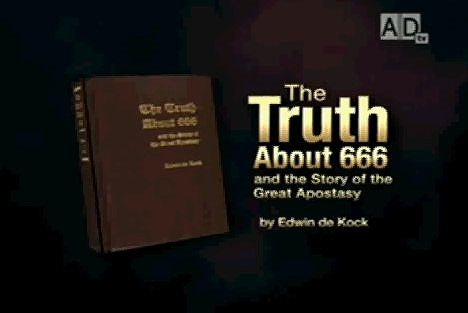
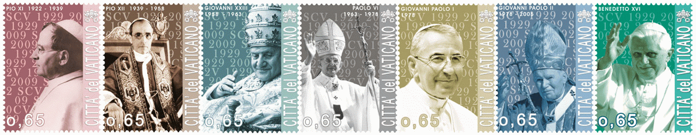

<!DOCTYPE html PUBLIC "-//W3C//DTD HTML 4.01 Transitional//EN">
<html>
  
<!-- Mirrored from biblelight.net/Whats-new.htm by HTTrack Website Copier/3.x [XR&CO'2014], Fri, 24 Nov 2017 13:17:35 GMT -->
<head>
    <meta content="text/html; charset=UTF-8" http-equiv="content-type">
    <title>What's New or Recently Revised on Bible Light</title>
    <meta content="en-us" http-equiv="Content-Language">
    <meta name="GENERATOR" content="Microsoft FrontPage 12.0">
    <meta name="ProgId" content="FrontPage.Editor.Document">
    <style type="text/css">
.auto-style2 {
	text-align: left;
	margin-left: 40px;
}
.auto-style4 {
	text-align: left;
}
.auto-style5 {
	margin-left: 40px;
}
.auto-style6 {
	text-align: center;
	font-size: large;
	margin-left: 40px;
}
.auto-style7 {
	color: #FF0000;
}
.auto-style8 {
	text-align: center;
}
  .auto-style1 {
	  font-size: large;
  }
  .auto-style10 {
	font-size: medium;
	background-color: #FFFFFF;
}
.auto-style11 {
	font-size: medium;
}
  .auto-style18 {
	text-align: center;
	font-size: large;
}
  .auto-style17 {
	font-size: small;
}
  .auto-style15 {
	  color: #FF0000;
	  font-size: x-large;
  }
  .auto-style9 {
	text-align: left;
	margin-left: 40px;
	font-size: large;
}
  </style>
  </head>
  <body style="   background-image: url(sand.jpg);" alink="#0000ff" vlink="#0000ff">
    <div align="center">
      <center>
        <table bgcolor="#4e4e4e" border="0" cellpadding="0" cellspacing="0">
          <tbody>
            <tr>
              <td></td>
              <td></td>
              <td></td>
            </tr>
            <tr>
              <td></td>
              <td rowspan="4">
                <p align="center"></p>
              </td>
              <td></td>
            </tr>
            <tr>
              <td></td>
              <td></td>
            </tr>
            <tr>
              <td></td>
              <td></td>
            </tr>
            <tr>
              <td></td>
              <td></td>
            </tr>
            <tr>
              <td></td>
              <td>
                <p align="center"></p>
              </td>
              <td></td>
            </tr>
            <tr>
              <td width="30"></td>
              <td rowspan="2" bgcolor="#4e4e4e" width="500">
                <p align="center"><em><font face="Arial Black" color="#ffff00" size="6">What's
                      New<br>
                    </font><font face="Arial Black" color="#ffff00" size="4">Recently
Revised
                      Or Timely</font></em></p>
              </td>
              <td width="30"><font face="Comic Sans MS" size="4"></font></td>
            </tr>
            <tr>
              <td width="30"></td>
              <td width="30"><font face="Comic Sans MS" size="4"></font></td>
            </tr>
            <tr>
              <td width="30"></td>
              <td width="500"><map name="FPMap1">
                  <area href="index-2.html" shape="rect" coords="345, 0, 475, 22">
                </map>
                </td>
              <td width="30"></td>
            </tr>
          </tbody>
        </table>
        <p align="center"><br>
        </p>
        <table align="center" bgcolor="#000066" border="0" cellpadding="6" height="234"
          width="640">
          <tbody>
            <tr align="center">
              <td bgcolor="#990000" valign="middle">
                <div align="left"><big><font color="white"><big><b><i>&nbsp;&nbsp;
                            <a name="seminar">THE COMING</a></i><br>
                        </b></big></font></big></div>
                <big><font color="white"><big><b><big>Economic
                          Collapse&nbsp;&nbsp;&nbsp;&nbsp; </big><br>
                      </b></big></font></big>
                <div align="right"><big><i><font color="white"><big><b>A
                            Biblical Perspective&nbsp;&nbsp; </b></big></font></i></big><br>
                </div>
              </td>
            </tr>
            <tr align="center">
              <td bgcolor="#3333ff" valign="middle"><b><big><font color="white">FACE
THE
                      FUTURE WITH FAITH, NOT FEAR</font></big><br>
                </b></td>
            </tr>
            <tr>
              <td bgcolor="#ccffff" valign="middle">
                <blockquote><br>
                  Economic indicators are confusing; political prospects
                  disappointing: global security threats frightening. Much of
                  what passes for biblical interpretation is shallow and
                  convenient, misleading and useless. Careful consideration of
                  the ancient text really does yield important information that
                  you need to know.<br>
                  <big><b><br>
                    </b></big>
                  <div align="center"><big><b>Presented by Alan J. Reinach</b></big><br>
                    <big><b>Executive Director of the <a href="http://www.churchstate.org/">Church
                          State Council</a></b></big><br>
                  </div>
                </blockquote>
              </td>
            </tr>
            <tr>
              <td bgcolor="#ccccff" valign="top">
                <blockquote>
                  <div align="left">
                    <ul>
                      <li><b><big><a href="http://www.ustream.tv/recorded/15453271">The
Coming
                              Economic Collapse - Not Whether But When.</a>&nbsp;
                            <a href="http://biblelight.info/Collapse-1.mp3">mp3</a></big></b></li>
                      <li><b><big><a href="http://www.ustream.tv/recorded/15468050">Sabbath
Morning
                              Sermon - Frogs in a Kettle.</a>&nbsp; <a href="http://biblelight.info/Collapse-1b-Frogs.mp3">mp3</a></big></b><big><a
                            href="http://www.ustream.tv/recorded/15476967"><span
                              style="font-weight: bold;"></span></a></big> </li>
                      <li><big><a href="http://www.ustream.tv/recorded/15476967"><span
                              style="font-weight: bold;">The Crisis Before the
                              Collapse.</span></a>&nbsp;<a href="http://biblelight.info/Collapse-2.mp3">
                          </a><a href="http://biblelight.info/Collapse-2.mp3"><b>mp3</b></a></big></li>
                      <li><a href="http://biblelight.info/Collapse-3.avi"><big><b>How
to
                              Survive the Coming Economic Collapse.</b></big></a><big><b>&nbsp;
                            <a href="http://biblelight.info/Collapse-3.mp3">mp3</a></b></big></li>
                    </ul>
                  </div>
                </blockquote>
              </td>
            </tr>
          </tbody>
        </table>
        <p align="center"><a href="http://amazingdiscoveries.org/"></a></p>
        <p align="center"><a href="http://www.whitehorsemedia.com/"> </a></p>
        <p align="center"><a href="http://www.amazingfacts.org/"> </a></p>
        <p align="center"><a href="http://www.biblestudy-theselastdays.com/"> </a></p>
        <p align="center"><a href="http://www.the7thday.org/"> </a><br>
          <b><a href="http://www.lltproductions.com/">By LLT Productions</a></b></p>
        <p align="center"><a href="http://babylonisrising.com/"> </a></p>
        <p align="center"><a href="http://vimeo.com/33202126"></a><br>
        </p>
        <p align="center"><a href="http://www.finalevents.com/"></a></p>
        <p align="center"><a href="http://revelationtoday.com/"></a><br>
        </p>
      </center>
    </div>
    <div align="center">
      <div style="text-align: center"> <br>
        <br>
      </div>
      <table style="border-style: solid; border-width: 3px; border-collapse: collapse; width: 80%; margin-left: 0px;"
        border="3" bordercolor="#000000" cellpadding="10" cellspacing="0">
        <tbody>
          <tr>
            <td style="text-align: left; font-size: large; color: #FF0000;" bgcolor="white"
              valign="top">
              <p style="margin-left: 40px; text-align: center;"><strong> <a href="http://www.leftbehind.com/">LEFT
                    BEHIND - THE END BEGINS<br>
                    OPENS IN THEATERS OCT 3RD</a></strong></p>
              <p style="margin-left: 40px"><span style="color: #000000">Matt
                  24:3&nbsp;</span>And as he sat upon the mount of Olives, the
                disciples came unto him privately, saying, Tell us, when shall
                these things be? and what shall be the sign of thy coming, and
                of the end of the world? <br>
                <span style="color: #000000">Matt 24:4&nbsp;</span>And Jesus
                answered and said unto them, <span style="text-decoration: underline">Take
                  heed that no man deceive you. </span> <br>
                <span style="color: #000000">Matt 24:5&nbsp;</span>For many
                shall come in my name, saying, I am Christ; and shall <span style="text-decoration: underline">deceive</span>
                many. </p>
              <p style="margin-left: 40px; text-align: center;"> <span style="color: #FF0000"><strong>
                    <a href="psttrib.html">LEFT BEHIND - THE SECRET RAPTURE <span
                        style="color: #FF0000"><em>DECEPTION</em></span></a></strong></span></p>
            </td>
          </tr>
          <tr>
            <td style="text-align: center" bgcolor="white" valign="top">
              <p class="story-header" style="font-size: large"> <a href="Tower-of-Babel.html"><strong>
                    An Ancient Bible Prophecy In Daniel Is Coming To Pass!</strong></a></p>
              <center><a href="Tower-of-Babel.html">
                  <table style="width: 600px">
                    <tbody>
                      <tr>
                        <td>Dan 2:43 And whereas thou sawest iron mixed with
                          miry clay, they shall mingle themselves with the seed
                          of men: but they shall not cleave one to another, even
                          as iron is not mixed with clay.<br style="margin-left: 120px">
                          Dan 2:44 And in the days of these kings shall the God
                          of heaven set up a kingdom, which shall never be
                          destroyed: and the kingdom shall not be left to other
                          people, but it shall break in pieces and consume all
                          these kingdoms, and it shall stand for ever.</td>
                      </tr>
                    </tbody>
                  </table>
                </a><a href="http://www.bbc.com/news/world-europe-27559714"> <span
                    style="color: #FF0000; font-size: x-large;"><strong>Eurosceptic
                      'earthquake' rocks EU elections</strong></span></a></center>
            </td>
          </tr>
          <tr>
            <td style="text-align: center" bgcolor="white" valign="top"> <b><font
                  size="6"><a href="faustina.html"> <span
                      style="color: #FF0000">Divine Mercy Sunday</span></a><span
                    style="color: #FF0000">?</span></font></b></td>
          </tr>
          <tr>
            <td bgcolor="#ffffff">
              <p align="center"><b><font face="Arial" size="4"><a href="protestants_declare_their_catholicity.html">Protestants
                      Declare Their Catholicity On Easter!</a></font></b></p>
            </td>
          </tr>
          <tr>
            <td style="text-align: center; font-size: large;" bgcolor="#ffffff">
              <b><a href="pasover.html">Was Jesus crucified on Wednesday,
                  Thursday, or Friday?</a></b></td>
          </tr>
          <tr>
            <td style="text-align: center; font-size: large;" bgcolor="#ffffff">
              <a href="http://www.youtube.com/watch?v=IsF2q-8ez08&amp;feature=youtu.be">
                Are Protestants Still Protesting?</a></td>
          </tr>
          <tr>
            <td style="text-align: center" bgcolor="#ffffff"> <font size="5"><a
                  href="pope-throne.html"> On Jan. 25th, 2014</a><br>
                <a href="pope-throne.html"> Pope Francis again enthroned himself
                  between Cherubim,<br>
                  Showing himself that he is God.</a></font></td>
          </tr>
          <tr>
            <td bgcolor="#ffffff">
              <p align="center"><b><font size="5"><a href="sukkoth.html">On What
                      Day Was Jesus Born?</a></font></b></p>
            </td>
          </tr>
          <tr>
            <td style="border-width: 1px; text-align: center;" bgcolor="white">
              <span style="font-size: medium"><strong style="font-size: large">
                  Powerpoint illustrations from the lecture I had the honor of
                  presenting <br>
                  at the Enduring Legacy - 70th Anniversary, <br>
                  2011 Pearl Harbor Symposium, Oahu, Hawaii.</strong></span><br>
              <br>
              <a href="http://biblelight.info/images/1941.ppt"> </a></td>
          </tr>
          <tr>
            <td style="border-width: 1px; text-align: center;" bgcolor="white">
              <h1><a href="death.html">TO HEAVEN AND BACK<br>
                  <span style="color: #FF0000">CNN's SPECIAL</span><br style="color: #FF0000">
                  <span style="color: #FF0000">TELLS AN ANCIENT LIE</span></a></h1>
            </td>
          </tr>
          <tr>
            <td style="border-width: 1px; text-align: center;" bgcolor="white">
              <span style="font-size: large">If you were at the Patrick Madrid
                open forum, this is the page that has the pictures you were not
                permitted to see:<br>
              </span><br style="font-size: medium">
              <font size="5"><a href="pope-throne.html"> On April 14th, 2013</a><br>
                <a href="pope-throne.html"> Pope Francis enthroned himself
                  between Cherubim,<br>
                  Showing himself that he is God.</a></font><br>
              <br>
              <a href="envoy.html"><strong> <span style="font-size: large">Here
                    is my previous discussion with Patrick Madrid.</span></strong></a></td>
          </tr>
          <tr>
            <td style="border-width: 1px; text-align: center;" bgcolor="white">
              <span style="font-size: small"><strong>Biblical Judean city of
                  Sha' arayim (two gates -1 Sam 17:52), <br>
                  near the spot where David smote Goliath, has been found! -- </strong>
                <a href="http://www.jpost.com/Features/In-Thespotlight/Archeologists-uncover-palace-from-Kingdom-of-David-320226">
                  <strong>Jerusalem Post</strong></a></span></td>
          </tr>
          <tr>
            <td style="text-align: center;" bgcolor="white" valign="top"> <a href="http://biblelight.info/666-hq.avi"
                target="_blank"> </a><br>
              <br>
              <a href="http://biblelight.info/666 ad.WMV"><strong>Low
                  Bandwidth</strong></a></td>
          </tr>
          <tr>
            <td style="text-align: center;" bgcolor="white" valign="top">
              <p style="text-align: center; font-size: x-large;"> <a href="Obama%20on%20religeous%20schools.html">
                  <strong style="color: #FF0000"> </strong></a><strong style="color: #FF0000"><a
                    href="Obama%20on%20religIous%20schools.html"> <span style="color: #FF0000">OBAMA
                      ON RELIGIOUS SCHOOLS</span></a></strong></p>
            </td>
          </tr>
          <tr align="center">
            <td class="auto-style1" bgcolor="white" valign="top"><strong> <a href="666.html#John22vfd"><font
                    color="red">Two New 18th Century Uses Of Vicarius Filii Dei
                    Discovered!</font></a></strong></td>
          </tr>
          <tr>
            <td class="auto-style8" bgcolor="white" valign="top"> <span class="auto-style17">&nbsp;</span><br
                class="auto-style15">
              <span class="auto-style9"> <a href="NEW%20EVANGELIZATION.html"><strong>THE
                    NEW EVANGELIZATION</strong></a></span><strong><br class="auto-style1">
              </strong> <a href="http://www.family2012.com/en/catecheses.php">
                <b><align="center"></align="center"></b></a><br>
              <big><big><big><font color="red"><b><span class="auto-style1">This
                          Vatican campaign <br>
                          lays the groundwork for the coming</span><big><br class="auto-style1">
                          <span class="auto-style1">Sunday Law.</span></big></b></font></big></big></big><br>
            </td>
          </tr>
          <tr>
            <td bgcolor="white" valign="top">
              <p class="auto-style18"><a href="freedom.html">FREEDOM IS IN
                  JEOPARDY</a></p>
            </td>
          </tr>
          <tr>
            <td class="auto-style8" bgcolor="white" valign="top"> <a href="Barclay.html"><span
                  class="auto-style1">Does the Pope Claim to be God?</span><br class="auto-style1">
                <span class="auto-style1">Mysterious Quote Regarding Pope Found!</span></a></td>
          </tr>
          <tr>
            <td class="auto-style8" bgcolor="white" valign="top"><big><big> <a
                    href="Bulletin.html">Bulletin of Prophetic Historicism</a><br>
                  by Edwin de Kock, author of</big><br>
                <a href="Publications%20by%20E.%20de%20Kock.pdf"><big><i>The
                      Truth About 666 and the Story of the Great Apostasy</i></big></a></big></td>
          </tr>
          <tr>
            <td class="auto-style8" bgcolor="white" valign="top"> <span class="auto-style11">Geologists
                </span><span class="auto-style10">I</span><span class="auto-style11">dentify
                Jerusalem Quake of Matthew 27:51-52, in 31 A.D. (±5 years).</span><br
                class="auto-style11">
              See <a href="http://www.tandfonline.com/doi/abs/10.1080/00206814.2011.639996">
                An early first-century earthquake in the Dead Sea</a> (IGR)<br>
              <br>
              <strong><span class="auto-style1"><a href="dan927.html">The Exact
                    Crucifixion Year Prophesied By Daniel's 70 Weeks.</a></span></strong><br
                class="auto-style1">
            </td>
          </tr>
          <tr align="center">
            <td class="auto-style4" bgcolor="white" valign="top">
              <p class="auto-style6"><span class="auto-style7"><strong>CUBA
                    YIELDS TO PAPAL PRESSURE</strong></span><br class="auto-style7">
                <span class="auto-style7"><strong>Declaring Good Friday A Public
                    Holiday</strong></span></p>
              <p class="auto-style5">At the insistence of the Pope, Cuba's
                communist government has decreed that Good Friday this year will
                be a public holiday. Less than 10% of the Cuban population are
                practicing Catholics, and the government has not yet decided
                whether or not the holiday will apply next year. (<strong><a href="http://www.bbc.co.uk/news/world-latin-america-17574712">BBC</a></strong>)<br>
              </p>
            </td>
          </tr>
          <tr align="center">
            <td bgcolor="white" valign="top">
              <p class="auto-style2">&nbsp;<font> The church took the pagan
                  philosophy and made it the buckler of faith against the
                  heathen. She took the pagan, Roman Pantheon, temple of all the
                  gods, and made it sacred to all the martyrs; so it stands to
                  this day. She took the pagan Sunday and made it the Christian
                  Sunday. She took the pagan Easter and made it the feast we
                  celebrate during this season.</font></p>
              <p class="auto-style2">...&nbsp;<font>There is, in truth,
                  something royal, kingly about the sun, making it a fit emblem
                  of Jesus, the Sun of Justice. Hence the church in these
                  countries would seem, to have said, "Keep that old, pagan
                  name. It shall remain consecrated, sanctified." And thus the
                  pagan Sunday, dedicated to Balder, became the Christian
                  Sunday, sacred to Jesus. </font>—— <a href="http://books.google.com/books?id=0X8QAAAAYAAJ&amp;dq=PASCHALE%20GAUDIUM.&amp;pg=PA808#v=onepage&amp;q=PASCHALE%20GAUDIUM.&amp;f=false">
                  <span class="gstxt_hlt"><em>PASCHALE GAUDIUM</em>, </span>by<span
                    style="font-variant:small-caps;"> William </span>L. <span
                    style="font-variant:small-caps;">Gildea, </span> D.D.</a>,
                <i>The Catholic World</i>, Vol. LVIII (58), Oct., 1893 to Mar.,
                1894.</p>
            </td>
          </tr>
          <tr align="center">
            <td bgcolor="white" valign="top"><b><a href="666.html#Nov_24_2011:"><big><big><i>Our
Sunday
                        Visitor</i> Explains Vicarius Filii Dei <i>Again</i></big></big></a></b><br>
            </td>
          </tr>
          <tr align="center">
            <td bgcolor="white" valign="top">
              <center>
                <h2><a href="95theses.html">Disputation of
                    Doctor Martin Luther<br>
                    on the Power and Efficacy of Indulgences</a></h2>
              </center>
              <center>
                <p>by Dr. Martin Luther, OCTOBER 31, 1517</p>
              </center>
            </td>
          </tr>
          <tr align="center">
            <td bgcolor="white" valign="top"><big><b><big><a href="Reversing%20God.html">REVERSING
                      AN ACT OF GOD:</a></big></b></big><br>
              <big><big><b>Vatican Advocates "creation of a world public
                    Authority"<br>
                    While Remembering The Tower Of Babel</b></big></big></td>
          </tr>
          <tr align="center">
            <td bgcolor="white" valign="top"><big><b><big><a href="http://www.propheciesdecoded.com/">Prophecies
                      DECODED Seminar</a><br>
                    Sept. 30 - 29 Oct. 2011</big></b></big><br>
            </td>
          </tr>
          <tr align="center">
            <td bgcolor="white" valign="top"><big><big><b><small><small><small><small><small>&nbsp;&nbsp;
                              </small></small></small></small></small><br> Pope
                    Prescribes the (Sunday) Catholic Mass for Unity.<br>
                  </b></big></big>
              <blockquote>
                <div align="justify"><big><big><small>Benedict XVI: "... a
                        Eucharistic spirituality is a real antidote to
                        individualism and egoism that often characterize daily
                        life, and leads to the rediscovery of gratuitousness,
                        the centrality of relationships, beginning with the
                        family, ... " <br>
                        At</small></big> ZENIT, Full text:&nbsp;<a href="http://www.zenit.org/article-33405?l=english">www.zenit.org/article-33405?l=english</a></big></div>
              </blockquote>
            </td>
          </tr>
          <tr align="center">
            <td bgcolor="white" valign="top"><big><b><a href="Sabbath%20Reform.html"><font
                      face="Times New Roman, Times, serif" size="4"><big>"A
                        Sabbath Reform Needed"</big></font></a></b><br>
              </big></td>
          </tr>
          <tr align="center">
            <td bgcolor="white" valign="top"><a href="Sabbath-Hibbs.html"><big><b>DOES
                    THE BIBLE TEACH THE SEVENTH DAY SABBATH<br>
                    IS THE DAY FOR CORPORATE WORSHIP?</b></big></a></td>
          </tr>
          <tr align="center">
            <td bgcolor="white" valign="top">
              <div align="center"><big><big> <strong>Pope Benedict Declares the
                      Virgin Mary<br>
                      to be the living Ark of the Covenant!</strong></big></big></div>
              <div align="justify">
                <blockquote><big>In the first reading, we heard: "then God's
                    temple in heaven was opened, and the ark of the covenant was
                    seen within the temple" (Revelation 11:19). What is the
                    significance of the ark? What does it appear to be? For the
                    Old Testament, it is the symbol of the presence of God in
                    the midst of his people. But now the symbol has given way to
                    reality. Thus the New Testament tells us that the true ark
                    of the covenant is a living and concrete person: it is the
                    Virgin Mary. God does not dwell in a piece of furniture, God
                    dwells in a person, in a heart: Mary, she who bore in her
                    womb the Eternal Son of God made man, Jesus Our Lord and
                    Savior. ― Benedict XVI, homily for the feast of the
                    Assumption of Mary, August 15, 2011, <a href="http://www.zenit.org/article-33198?l=english">Zenit</a>.<br>
                  </big></blockquote>
              </div>
              <div align="justify"><big>The New Testament says absolutely
                  nothing about Mary being taken up to heaven, nor does it in
                  any way make any parallels between Mary and the Ark of the
                  Sanctuary of God in heaven. See <a href="worship_of_the_virgin_mary.html">Worship
                    of the Virgin Mary.</a><br>
                  <br>
                  The Ark of the Covenant seen in the heavenly temple of God in
                  Rev. 11:19 IS very important. What Covenant? The Covenant of
                  the 10 Commandments of God, by which all humanity will be
                  judged. Inscribed on 2 tables of stone in that Ark is a
                  Commandment that the Roman Catholic Church has presumptuously
                  attempted to change on its own authority, without a "thus
                  sayeth the Lord." This blasphemous usurpation of authority was
                  foretold by the prophet Daniel, 7:25, and when a Sunday law is
                  enforced, it will be the "Mark of the Beast."</big> </div>
            </td>
          </tr>
          <tr align="center">
            <td bgcolor="white" valign="top"><big><big><b><font color="red"><big><small>In
                          Fulfillment Of Bible Prophecy:</small><br>
                        <small>The MARK of Papal Apostasy,</small></big><br>
                      <big>A SUNDAY LAW IS COMING<br>
                        <small><br>
                          <font color="#3333ff"><a href="http://ndcatholic.org/editorials/column0711/index.html">North
Dakota
                              Catholic Conference<br>
                              Says Government Enforced Sunday Laws<br>
                            </a></font></small></big></font><a href="http://ndcatholic.org/editorials/column0711/index.html">"are
                      not about honoring the Sabbath day."<br>
                    </a>They Are Correct, God's Sabbath Is Saturday, Not Sunday.<br>
                    <font color="red"><big> <small><small><small>&nbsp;</small></small></small><br>
                      </big></font></b></big></big><b><a href="http://www.catholicnewsagency.com/news/vatican-official-exhorts-catholics-to-set-aside-sundays-for-god-and-rest/"><big><big>Vatican
official
                      exhorts Catholics to<br>
                      set aside Sundays for God and rest</big></big></a></b><br>
              <big><big><b><font color="red"><big><small> <small><small>&nbsp;</small></small></small><br>
                      </big></font></b><a href="Angelus-6-26-2011.html"><b>Pope
Benedict&nbsp;
                      XVI: "Without Sunday we cannot live"</b></a> <br>
                  <small>Sundaykeeping promoted as the antidote for the empty
                    freedom of Western individualism.</small></big></big><br>
              <br>
              <a href="http://www.europeansundayalliance.eu/site/home/article/74.html"><big><big><b>European
Sunday
                      Alliance Forms To Compel<br>
                      Governmental Enforcement Of Sunday Rest<br>
                    </b></big></big></a><b><big>with the euphemism the&nbsp;
                  “added value” of the synchronisation of free time.<br>
                  <br>
                </big><font size="4"><a href="Benedict-sunday-rest.html">POPE
                    BENEDICT PROMOTES SUNDAY REST<br>
                    FOR COMMUNITY SOLIDARITY.</a><br>
                </font></b>
              <p align="center"><b><font size="5">Archbishop of Reggio's Sermon<br>
                    to the Council of Trent on the Power of the Church:<br>
                  </font><font size="4"><a href="bssb-1443-1444.html"> By Our
                      Authority The Sabbath Was Changed To Sunday!</a></font></b></p>
              <p align="center"><a href="3-Angels.html"><font size="6">The 3
                    Angel's Messages</font></a></p>
            </td>
          </tr>
          <tr align="center">
            <td bgcolor="white" valign="top"><big><big>Catholic League president
                  <a href="http://www.catholicleague.org/release.php?id=2189">Bill
                    Donohue</a> regrets<br>
                  Historic Protestantism's biblical teaching on <a href="antichrist.html">Antichrist</a>.</big></big></td>
          </tr>
          <tr align="center">
            <td bgcolor="white" valign="top"><big><big><b><a href="http://www.msnbc.msn.com/id/43768864/ns/us_news-life/">California
Schools
                      Must Teach The History of Immorality.</a></b></big></big>
            </td>
          </tr>
          <tr align="center">
            <td bgcolor="white" valign="top"><big><big><big><b>VATICAN'S&nbsp;
                      SUN&nbsp; INDEX&nbsp; PAGE</b></big></big></big><br>
              <a href="http://www.vatican.va/phome_en.htm"></a><br>
              <br>
            </td>
          </tr>
          <tr align="center">
            <td bgcolor="white" valign="top"><small><small><b><big><big><small><small><big><big><a
                                  href="Sabbath-MacArthur.html"><big><big>John
                                      MacArthur<br>
                                      A Nine Commandment Protestant</big></big></a></big></big></small></small></big></big></b></small></small></td>
          </tr>
          <tr align="center">
            <td style="background-color: white; vertical-align: top;"><big style="font-weight: bold;"><big><a
                    href="http://www.ustream.tv/channel/honolulu-central-sda-booth-cam">Honolulu
Central
                    SDA Sabbath Church Service<br>
                  </a></big></big><big>Streamed live Saturday morning.<br>
              </big><b><a href="http://www.youtube.com/chadsshow">More archived
                  services.</a></b><big style="font-weight: bold;"><big><a href="http://www.ustream.tv/channel/honolulu-central-sda-booth-cam"><br>
                  </a></big></big></td>
          </tr>
          <tr style="font-weight: bold;" align="center">
            <td style="background-color: white; vertical-align: top;"><a href="http://en.wikipedia.org/wiki/Tiara_of_Benedict_XVI"><big><big>Pope
Benedict
                    XVI presented with new triple tiara!</big></big></a></td>
          </tr>
          <tr>
            <td bgcolor="#ffffff">
              <p align="center"><font size="5">A Stunning Photo of our Milky Way
                  Galaxy and Orion.<br>
                </font><a href="http://skysurvey.org/"> <font size="4">http://skysurvey.org</font></a></p>
              <blockquote>
                <p align="center"><a href="http://skysurvey.org/"> </a></p>
                <p align="left">Dark, heavy clouds came up, and clashed against
                  each other. The atmosphere parted and rolled back, then we
                  could look up through the open space in Orion, from whence
                  came the voice of God. The Holy City will come down through
                  that open space. I saw that the powers of earth are now being
                  shaken, and that events come in order. War, and rumors of
                  war, sword, famine and pestilence, are first to shake the
                  powers of earth, then the voice of God will shake the Sun,
                  Moon and Stars, and this earth also. <font face="Times New Roman">
                  </font>E. G. White, <a href="http://egwtext.whiteestate.org/publication.php?pubtype=Periodical&amp;bookCode=Broadside2&amp;lang=en&amp;collection=2&amp;section=all&amp;year=1849&amp;month=January&amp;day=31">Topsham,
January
                    31, 1849.</a></p>
                <p align="left">Luke 21:25 <font color="#ff0000">And there
                    shall be signs in the sun, and in the moon, and in the
                    stars; and upon the earth distress of nations, with
                    perplexity; the sea and the waves roaring;</font><br>
                  Luke 21:26 <font color="#ff0000">Men's hearts failing them
                    for fear, and for looking after those things which are
                    coming on the earth: for the powers of heaven shall be
                    shaken.</font></p>
                <p align="center"><b><font face="Times New Roman" size="4"><a href="http://www.space.com/11328-strange-space-explosion-black-hole.html">Astronomers
Witness
                        the Largest Cosmic Explosion Ever<br>
                        in the Constellation Draco (Dragon)!</a></font></b></p>
              </blockquote>
            </td>
          </tr>
          <tr>
            <td bgcolor="#ffffff">
              <p align="center"><font size="5"><b> <a href="http://jerrysnook.net/">Articles
                      by Jerry Stevens at <br>
                      Jerry's Nook<br>
                    </a></b></font></p>
            </td>
          </tr>
          <tr>
            <td bgcolor="#ffffff">
              <p align="center"><b><font size="5">John Paul II Beatification</font></b><br>
                <b><font size="6"><a href="faustina.html">Divine
Mercy
                      Sunday, May 1, 2011</a></font></b></p>
            </td>
          </tr>
          <tr>
            <td bgcolor="#ffffff">
              <p align="center"><b><font face="Times New Roman" size="5"> <a href="pope-throne.html">An
                      Incredible Photo Of Benedict XVI.</a></font></b></p>
            </td>
          </tr>
          <tr>
            <td bgcolor="#ffffff">
              <p align="center"><b><a href="JONII-BXVI.html"><font
                      size="5">"An Event of Overwhelming Force"</font><i><font size="5">
                        <font face="Times New Roman">- </font></font> </i><font
                      face="Times New Roman" size="5">Pope Benedict XVI.</font></a></b></p>
            </td>
          </tr>
          <tr>
            <td bgcolor="#ffffff">
              <p align="center"><font size="4">Now Available from the Author</font></p>
              <p align="center"><b><a href="Truth-666.html">
                    <font size="6">The Truth About 666 <br>
                    </font><font size="4">and the Story of the Great Apostasy</font></a></b></p>
              <p align="center"><b><font size="4">Three Volumes in One<br>
                  </font></b><font size="4">by<br>
                  Edwin de Kock</font></p>
            </td>
          </tr>
          <tr>
            <td bgcolor="#ffffff">
              <p align="center"><b><font size="5"> <a href="3-Angels.html">The
                      3 Angel's Messages</a></font></b></p>
            </td>
          </tr>
          <tr>
            <td bgcolor="#ffffff">
              <blockquote>
                <p align="center"><b><font size="4">Appropriate Scripture For
                      December 18th, 2010.</font></b></p>
                <p align="left"><font size="4">Isa 5:20 </font>Woe unto them
                  that call evil good, and good evil; that put darkness for
                  light, and light for darkness; that put bitter for sweet, and
                  sweet for bitter!<br>
                  Isa 5:21 Woe unto them that are wise in their own eyes, and
                  prudent in their own sight!</p>
                <p align="center"><b><a href="http://www.wnd.com/index.php?fa=PAGE.view&amp;pageId=243213">THE
EXODUS
                      FROM THE U.S. MILITARY HAS BEGUN.</a></b></p>
              </blockquote>
            </td>
          </tr>
          <tr>
            <td bgcolor="#ffffff">
              <blockquote>
                <p align="center"><font size="6">The Seventh Day Sabbath<br>
                  </font><font size="5">Sought Out, and Celebrated<br>
                  </font><font size="4">By<br>
                  </font><font size="5">Saints obtaining Victory over the<br>
                    Mark of the Beast.<br>
                  </font><font size="4">by Thomas Tillam - Minister of the
                    Gospel<br>
                  </font><font size="5">&nbsp;(1657) </font></p>
                <p>&nbsp;&nbsp;&nbsp; The first Royal Law that ever Jehovah
                  instituted, and for our Example celebrated, (namely His
                  blessed Seventh-day Sabbath,) is in these very last days
                  become the last great controversy between the Saints and the
                  Man of Sin, The Changer of Times and Laws. Awake ye slumbering
                  Virgins, the figtree is apparently budded, the signs of his
                  second coming who is The Lord of the Sabbath, are so fairly
                  visible, that although the day and hour be not known, yet
                  doubtless this generation shall not pass; till new Jerusalems
                  glory shall crown obedient Saints with everlasting Rest. </p>
                <font size="4">
                  <p align="center"><b>One Of Earliest Known Associations Of The
                      Seventh Day Sabbath<br>
                      With Dan. 7:25 And The Mark Of The Beast!</b></p>
                </font>
                <p align="center">Available as a free .pdf download at<br>
                  <span style="text-align: center;"> <b> <a href="http://www.sealingtime.com/onlinelibrary/books/other/Thomas-Tillam/index.html">
                        <font size="4">Sealing Times Ministries.</font></a></b></span></p>
              </blockquote>
            </td>
          </tr>
          <tr>
            <td bgcolor="#ffffff">
              <p align="center"><font size="6">A New Discovery<br>
                  <a href="http://www.biblelight.net/Extravagantes.htm">Dominum
                    Deum Nostrum Papam<br>
                    Our Lord God the Pope</a></font></p>
            </td>
          </tr>
          <tr>
            <td bgcolor="#ffffff">
              <p align="center"><b><font size="5">Pope Issues 200 Page Document:
                    "The Word of the Lord".</font></b></p>
              <blockquote>
                <p align="left">29. ... authentic biblical hermeneutics can only
                  be had within the faith of the Church, ... The Bible is the
                  Church s book, and its essential place in the Church s life
                  gives rise to its genuine interpretation.</p>
                <p align="left">30. ... An authentic interpretation of the Bible
                  must always be in harmony with the faith of the Catholic
                  Church.</p>
                <p align="left"> Apostolic Exhortation <i>Verbum Domini</i>,
                  Benedict XVI, 30 Sept, 2010.</p>
                <p align="center"> </p>
                <p align="center"><b><font size="4"><a href="unanimous-consent.html">The
                        Unanimous Consent of the Fathers and Bible
                        Interpretation</a></font></b></p>
              </blockquote>
            </td>
          </tr>
          <tr>
            <td bgcolor="#ffffff">
              <p align="center"><b><font size="5">Archbishop of Reggio's Sermon<br>
                    to the Council of Trent on the Power of the Church:<br>
                  </font><font size="4"><a href="bssb-1443-1444.html"> By Our
                      Authority The Sabbath Was Changed To Sunday!</a></font></b></p>
            </td>
          </tr>
          <tr>
            <td bgcolor="#ffffff">
              <p align="center"><b><font size="4"><a href="Benedict-sunday-rest.html">POPE
                      BENEDICT PROMOTES SUNDAY REST<br>
                      FOR COMMUNITY SOLIDARITY.</a></font></b></p>
            </td>
          </tr>
          <tr>
            <td bgcolor="#ffffff">
              <p align="center"> <object height="385" width="480"><param name="movie"
                    value="http://www.youtube.com/v/bKoitNGd4XA?fs=1&amp;hl=en_US&amp;rel=0"><param
                    name="allowFullScreen" value="true"><param name="allowscriptaccess"
                    value="always"> <embed src="http://www.youtube.com/v/bKoitNGd4XA?fs=1&amp;hl=en_US&amp;rel=0"
                    type="application/x-shockwave-flash" allowscriptaccess="always"
                    allowfullscreen="true" height="385" width="480"></object></p>
              <br>
            </td>
          </tr>
          <tr>
            <td bgcolor="#ffffff">
              <p align="center"> <object height="385" width="480"><param name="movie"
                    value="http://www.youtube.com/v/q6gdq-t1dpY?fs=1&amp;hl=en_US&amp;rel=0"><param
                    name="allowFullScreen" value="true"><param name="allowscriptaccess"
                    value="always"> <embed src="http://www.youtube.com/v/q6gdq-t1dpY?fs=1&amp;hl=en_US&amp;rel=0"
                    type="application/x-shockwave-flash" allowscriptaccess="always"
                    allowfullscreen="true" height="385" width="480"></object></p>
              <br>
            </td>
          </tr>
          <tr>
            <td bgcolor="#ffffff">
              <p align="center"><font size="5">PAPAL CLAIMS TO AUTHORITY<br>
                </font><font size="4"> <a href="claims.html#Bellarmine">All
                    Christ's Scriptural Names Applied To The Pope!</a></font></p>
            </td>
          </tr>
          <tr>
            <td bgcolor="#ffffff">
              <p align="center"><font size="6"> <a href="new-earth.html">The
                    Sabbath, Creation, and the New Earth<br>
                    Isaiah 66:23</a></font></p>
            </td>
          </tr>
          <tr>
            <td bgcolor="#ffffff">
              <p align="center"><font size="6"> <a href="lawlessness.html">Lawlessness
                    In The Temple Of God</a><br>
                </font><font size="5">2 Thessalonians 2</font></p>
            </td>
          </tr>
          <tr>
            <td bgcolor="#ffffff">
              <p align="center"><b><font size="5"> <a href="Dan8-mark.html">The
                      Mark Of The Beast In Daniel 8 - 12</a></font></b><br>
                (Added the Seal of God)</p>
            </td>
          </tr>
          <tr>
            <td bgcolor="#ffffff">
              <p align="center"><b><u><font face="Arial Narrow"><font size="5">May
Crowning
                        of Mary Statues and Processions<br>
                      </font><font size="4"> <a href="baruch.html">(The
Apocryphal
                          Book of Baruch on Idolatry)</a></font></font></u></b></p>
            </td>
          </tr>
          <tr>
            <td bgcolor="#ffffff">
              <p align="center"><font size="5"><a href="pentecost.html">Should
                    Pentecost Always Be On Sunday?<br>
                    What Does The Bible Teach?</a></font></p>
            </td>
          </tr>
          <tr>
            <td align="center" bgcolor="#ffffff">
              <h2 id="storytitle"><a href="http://www.sofiaecho.com/2010/03/24/878190_guarantee-that-sundays-will-be-work-free-eu-leaders-urged">
                  <font color="#ff0000">EU urged to Guarantee Work-free Sundays</font></a></h2>
              <h1><font size="5"><a href="http://www.zenit.org/article-28664?l=english">
                    <font color="#ff0000">Europeans Initiate Campaign for
                      Work-Free Sunday</font></a></font></h1>
              <p> Campaign Web site: <a href="http://www.free-sunday.eu/" target="_blank">
                  www.free-sunday.eu</a></p>
              <p>Exo 20:10 But <u>the seventh day</u> is the sabbath of the
                LORD thy God:</p>
              <p><font size="5"><b><a href="notsun.html">Sunday
Is
                      NOT the Sabbath!</a></b></font></p>
            </td>
          </tr>
          <tr>
            <td align="center" bgcolor="#ffffff"> <b> <a href="http://www.foxnews.com/us/2010/03/17/southern-california-city-says-home-bible-group-permit/">
                  <font size="4">Rancho Cucamonga, California Forbids Home Bible
                    Study Without Permit</font></a></b>
              <p> <b><font size="4"><a href="http://cwnewz.com/content/view/985/2/">
                      Gilbert, Arizona Forbids Home Bible Studies </a></font></b></p>
            </td>
          </tr>
          <tr>
            <td align="center" bgcolor="#ffffff"> <font size="5"><b><a href="medtrix.html">Mary
                    Co-redemptrix Conference.</a></b></font><br>
              Proposed 5th Marian Dogma discussed.<br>
              <a href="http://www.insidethevatican.com/conference-live-streaming.htm">Archived
                Video</a></td>
          </tr>
          <tr>
            <td align="center" bgcolor="#ffffff">
              <p align="center"><b><font size="5"><a href="purgatory-staples-white.html">Purgatory
                      Refuted.</a><br>
                    Debate on 1 Corinthians 3, James White Versus Tim Staples<br>
                    January 28, 2010.</font></b></p>
            </td>
          </tr>
          <tr>
            <td align="center" bgcolor="#ffffff">
              <p align="center"><b><font color="#ff0000" size="4"><a href="sabbath-more-fully.html">THE
                      TIME HAS COME<br>
                      "TO PROCLAIM THE SABBATH MORE FULLY." </a></font></b><font
                  size="4"><br>
                  "there is a power in the Sabbath truth we have never known
                  before"</font></p>
              <span class="text">
                <p align="center"><b><font size="4"><a href="times%26laws-ccc.html">Think
To
                        Change Times And Laws:<br>
                        Daniel 7:25 In The Catechism Of The Catholic Church</a></font></b></p>
              </span>
              <p align="center"><b><font size="4"><a href="true-church.html">Identifying
the
                      True Church Proclaiming The Elijah Message <br>
                      From Scripture</a></font></b></p>
            </td>
          </tr>
          <tr>
            <td align="center" bgcolor="#ffffff">
              <p align="center"><font size="4"><a href="http://www.nytimes.com/2009/12/31/us/31meat.html?pagewanted=1&amp;_r=1">Your
Fast
                    Food Burger May Contain </a><br>
                  <a href="http://www.nytimes.com/2009/12/31/us/31meat.html?pagewanted=1&amp;_r=1">Pet
Food
                    Grade Beef Trimmings <br>
                    Treated With Ammonia To Kill Pathogens.</a></font></p>
            </td>
          </tr>
          <tr>
            <td align="center" bgcolor="#ffffff">
              <p align="center"><b><font size="4"><a href="http://www.zenit.org/article-27785?l=english">Pope
                      Urged To Define Fifth Marian Dogma</a></font></b></p>
              <p align="center"><font size="4">Mary: Spiritual Mother of All
                  Humanity, <br>
                  Coredemptrix, Mediatrix of All Graces, and Advocate.<br>
                  - <a href="medtrix.html">MORE</a> -</font></p>
            </td>
          </tr>
          <tr>
            <td align="center" bgcolor="#ffffff">
              <p align="center"><font size="5">Does The Catholic Church<br>
                </font><font size="4">"follow Christ <strong>fully</strong> and
                  keep his commandments exactly as he instructed"?<br>
                </font><font size="5"><a href="keating-answered.html">An Answer
                    To Karl Keating.</a></font></p>
            </td>
          </tr>
          <tr>
            <td align="center" bgcolor="#ffffff">
              <h2><font color="#ff0000">Germany Reaffirms Ban On Sunday Shopping</font></h2>
              <blockquote>
                <h4 class="detailContentTeasertext" align="left"><span style="font-weight: 400;">Ruling
                    in favor of the Catholic and Lutheran churches, Germany's
                    highest court has found that the city of Berlin's ten
                    shopping Sundays a year go against the constitutional
                    protection of Sundays as a day of rest.&nbsp; -<a href="http://www.dw-world.de/dw/article/0,,4953600,00.html">MORE</a>-</span></h4>
                <p class="detailContentTeasertext"><b><a href="http://www.dutchnews.nl/news/archives/2010/03/supermarkets_in_court_over_sun.php">
                      <font size="4">DUTCH SUNDAY LAW CHALLENGED</font></a></b></p>
              </blockquote>
            </td>
          </tr>
          <tr>
            <td align="center" bgcolor="#ffffff">
              <p align="center"><b><font size="5">Coalition Of Christians Put US
                    Government On Notice:</font></b></p>
              <blockquote>
                <p align="left">Because we honor justice and the common good, we
                  will not comply with any edict that purports to compel our
                  institutions to participate in abortions, embryo-destructive
                  research, assisted suicide and euthanasia, or any other
                  anti-life act; nor will we bend to any rule purporting to
                  force us to bless immoral sexual partnerships, treat them as
                  marriages or the equivalent, or refrain from proclaiming the
                  truth, as we know it, about morality and immorality and
                  marriage and the family. We will fully and ungrudgingly render
                  to Caesar what is Caesar s. But under no circumstances will
                  we render to Caesar what is God s.</p>
              </blockquote>
              <p align="center"><b><font size="4"><a href="http://www.manhattandeclaration.org/the-declaration">The
Manhattan
                      Declaration: A Call of Christian Conscience</a></font></b></p>
              <p align="center"><font size="4"><b><a href="http://www.shepherdsfellowship.org/pulpit/Posts.aspx?ID=4444">A
                      Christian Explains Why He Will Not Sign The Declaration.</a></b></font></p>
            </td>
          </tr>
          <tr>
            <td align="center" bgcolor="#ffffff"><span class="itembody"><font size="4"><b><a
                      href="Tower-of-Babel.html">Devout Roman Catholic
                      Unanimously Chosen As EU President</a></b></font></span></td>
          </tr>
          <tr>
            <td align="center" bgcolor="#ffffff"><b><span class="itembody"><font
                    size="5">European Court Rules Display Of Crucifix<br>
                    In Italian Schools To Be A Violation<br>
                    Of Freedom Of Religion.</font></span></b>
              <p><b><span class="itembody"><font size="4"><a href="http://cmiskp.echr.coe.int/tkp197/view.asp?action=html&amp;documentId=857732&amp;portal=hbkm&amp;source=externalbydocnumber&amp;table=F69A27FD8FB86142BF01C1166DEA398649">Press
                        Release</a></font></span></b> </p>
              <p><b><span class="itembody"><font size="4"><a href="http://news.bbc.co.uk/2/hi/europe/8358027.stm">Greek
                        Orthodox Call Emergency Synod.</a></font></span></b></p>
            </td>
          </tr>
          <tr>
            <td align="center" bgcolor="#ffffff">
              <p><b><font size="5">OBAMA SEEKS TO OVERTHROW BIBLICAL MORALITY<br>
                  </font>GOD CAN NOT BLESS WHAT HE CONDEMNS AS SIN</b> </p>
              <blockquote>
                <p align="left">You will see a time in which we as a nation
                  finally recognize relationships between two men or two women
                  as just as real and admirable as relationships between a man
                  and a woman.&nbsp; ...&nbsp; Thank you for the work you re
                  doing. God bless you. God bless America.<font face="Times New Roman">
                    </font><span class="itembody"> </span><a href="http://americansfortruth.com/news/transcript-of-obamas-speech-to-the-gay-lobby-group-human-rights-campaign.html">Speech
to
                    the Human Rights Campaign (HRC)<span class="itembody"> by
                      President Barak Obama, October 10, 2009.</span></a><span class="itembody">&nbsp;
                    (<a href="http://www.youtube.com/watch?v=NxyqEv4rDTg&amp;feature=player_embedded#">Video</a>)</span>
                </p>
                <p align="left"><span class="itembody">Obama's vision for
                    America can only come to pass if the freedom to express
                    Christian biblical morality is overruled and suppressed.</span></p>
              </blockquote>
              <p><span class="itembody">Psa 12:8 (NIV) The wicked freely strut
                  about when what is vile is honored among men.</span></p>
            </td>
          </tr>
          <tr>
            <td align="center" bgcolor="#ffffff"><font size="5"><a href="http://www.telegraph.co.uk/news/worldnews/middleeast/iran/6256173/Mahmoud-Ahmadinejad-revealed-to-have-Jewish-past.html">Iranian
leader
                  Mahmoud Ahmadinejad is Jewish!</a></font></td>
          </tr>
          <tr>
            <td align="center" bgcolor="#ffffff"><font size="6"><b><font color="#ff0000">QUMRAN
                    COPPER SCROLL DECIPHERED!</font></b></font>
              <p><b><font size="5">IT REVEALS THE <i>EXACT</i> BURIAL LOCATIONS<br>
                    OF THE TEMPLE TREASURES<i><br>
                    </i></font><i><font size="6">AT QUMRAN!</font></i></b></p>
              <p><b><font size="4"><i>EXCAVATIONS MAY SOON FIND<br>
                    </i></font><i><font size="5">THE ARK &amp; TABERNACLE OF
                      MOSES.</font></i></b> </p>
              <p><font size="5"><b><i>See the Videos at</i></b></font><b><i><font
                      size="5"><br>
                      <a href="http://www.copper-scroll-project.com/">T</a></font><a
                      href="http://www.copper-scroll-project.com/"><font size="4">HE
                        </font><font size="5">C</font><font size="4">OPPER </font><font
                        size="5">S</font><font size="4">CROLL </font><font size="5">P</font><font
                        size="4">ROJECT</font></a></i></b></p>
            </td>
          </tr>
          <tr>
            <td align="center" bgcolor="#ffffff"><font size="4"><b><i><a href="http://www.memri.org/bin/articles.cgi?Page=archives&amp;Area=sd&amp;ID=SP256109">Ancient
Coins
                      Bearing The Face And Name of JOSEPH Found In Egypt! </a></i></b></font></td>
          </tr>
          <tr>
            <td align="center" bgcolor="#ffffff">
              <p align="center"><b><font color="#ff0000" size="5">VICARIUS FILII
                    DEI<br>
                    OFFICIAL USE BY A POPE FOUND!</font></b></p>
              <p align="center"><span style="widows: 2; text-transform: none; text-indent: 0px; letter-spacing: normal; border-collapse: separate; font-family: 'times new roman'; font-style: normal; font-variant: normal; font-weight: normal; font-size: 16px; line-height: normal; white-space: normal; orphans: 2; color: rgb(0, 0, 0); word-spacing: 0px; font-size-adjust: none; font-stretch: normal;"
                  class="Apple-style-span"><span style="border-collapse: collapse; color: rgb(255, 0, 0); font-size: 18px; font-weight: bold;"
                    class="Apple-style-span">VICARIUS FILII DEI USED TWICE BY
                    POPE PAUL VI <br>
                    IN OFFICIAL DECREES</span></span></p>
              <p align="center"></p>
              <p align="center"><font size="4"><b>Pope Leo IX in a letter in
                    1054 A.D. <br>
                    affirmed the Donation of Constantine as genuine,<br>
                    and cited the portion with Vicarius Filii Dei.<br>
                    <br>
                    THIS LETTER RESULTED IN <br>
                    THE CATHOLIC CHURCH BEING SPLIT IN TWO!</b></font></p>
              <p align="center"></p>
              <p align="center"><font color="#ff0000" size="5"><b>14TH CENTURY
                    CANON LAWYER<br>
                    APPLIED VICARIUS FILII DEI TO THE POPE<br>
                    HE ALSO SAYS<br>
                    THE POPE CHANGED SABBATH TO SUNDAY!</b></font></p>
              <p align="center"><font color="#ff0000" size="5"><b> </b></font></p>
              <p align="center"><font size="4"><b>See: <a href="666.html#OFFICIAL">666,
                      The Number of the Beast</a></b></font></p>
              <p align="center"><font size="5"><a href="wiki.html">Vicarius Filii
                    Dei <br>
                    Catholic Censorship At WikiPedia</a></font></p>
            </td>
          </tr>
          <tr>
            <td align="center" bgcolor="#ffffff"><a href="vatican.html"></a></td>
          </tr>
          <tr>
            <td align="center" bgcolor="#ffffff">
              <p align="center">Can the word antichrist as defined in the
                epistles of John be applied biblically to the Papacy?<br>
                <b><font size="7"><a href="antichrist_and_jesus.html"><font color="#ff0000">Antichrist:</font><br>
                    </a></font><a href="antichrist_and_jesus.html"><font size="5">Denying
Jesus
                      Christ is Come in the Flesh</font></a></b></p>
            </td>
          </tr>
          <tr>
            <td align="center" bgcolor="#ffffff"><b><font size="5"><a href="sabbath-lunacy.html">SABBATH
                    LUNACY</a></font></b></td>
          </tr>
          <tr>
            <td align="center" bgcolor="#ffffff"><font size="5"><font color="#ff0000">Religious
                  Freedom In Jeopardy<br>
                </font><a href="http://www.wnd.com/index.php?fa=PAGE.view&amp;pageId=108084">New
Hampshire
                  Judge Opposed To Christian <br>
                  Home Schooling Orders Child To Public School</a></font></td>
          </tr>
          <tr>
            <td align="center" bgcolor="#ffffff"><font size="5"><b><a href="http://news.bbc.co.uk/2/hi/uk_news/scotland/8151431.stm">Confused
Presbyterian
                    Scots Protest Sunday Ferry Service</a><br>
                  <a href="http://news.bbc.co.uk/2/hi/uk_news/scotland/8151431.stm">As
A
                    Violation Of The Ten Commandments</a></b></font>
              <p><b><font size="4"><a href="http://www.telegraph.co.uk/news/newstopics/politics/scotland/5865063/First-Sunday-ferry-sparks-religious-row-on-Scottish-island.html">Another
                      Report</a></font></b></p>
              <p><b><font size="4"><a href="http://www.dayonescotland.org/">Dayone
Scotland
                      Sabbath</a></font></b></p>
              <p>Exo 20:10 But <u>the seventh day</u> is the sabbath of the
                LORD thy God:</p>
              <p><font size="5"><b><a href="notsun.html">Sunday
Is
                      NOT the Sabbath!</a></b></font></p>
            </td>
          </tr>
          <tr>
            <td align="center" bgcolor="#ffffff"><font size="5"><b><a href="http://edition.cnn.com/2009/WORLD/europe/07/23/france.sunday.shopping/">France
Approves
                    Sunday Shopping</a></b></font></td>
          </tr>
          <tr>
            <td align="center" bgcolor="#ffffff"><b><font size="5"><a href="http://www.palibandaily.com/2009/07/09/ireland-makes-blasphemy-illegal/"><font
                      color="#ff0000">Ireland Makes Blasphemy Illegal</font></a></font></b></td>
          </tr>
          <tr>
            <td align="center" bgcolor="#ffffff">
              <p align="center"><b><font color="#ff0000" size="4">POPE CALLS FOR
                    ONE SUPREME WORLD GOVERNMENT</font></b></p>
              <blockquote>
                <p align="left"><i>67.&nbsp; ... there is urgent need of a true
                    world political authority,</i> as my predecessor Blessed
                  John XXIII indicated some years ago. ... Obviously it would
                  have to have the authority to ensure compliance with its
                  decisions from all parties, ... <font face="Times New Roman">
                  </font><b><i><a href="http://www.vatican.va/holy_father/benedict_xvi/encyclicals/documents/hf_ben-xvi_enc_20090629_caritas-in-veritate_en.html">CARITAS
IN
                        VERITATE</a>, </i></b>Encyclical of Pope Benedict XVI,
                  June 29, 2009.</p>
                <p align="left">Who do you think the Pope has in mind to head
                  this supreme global political authority?</p>
                <p align="left">Rev 17:12 And the ten horns which thou sawest
                  are ten kings, which have received no kingdom as yet; but
                  receive power as kings one hour with the beast.<br>
                  Rev 17:13 These have one mind, and shall give their power and
                  strength unto the beast.</p>
              </blockquote>
            </td>
          </tr>
          <tr>
            <td align="center" bgcolor="#ffffff">
              <p align="center"><a href="darkness.html"><font size="6">God The
                    Father Was Present At The Cross<br>
                  </font><font size="5">Veiled By The Supernatural Darkness</font></a></p>
            </td>
          </tr>
          <tr>
            <td align="center" bgcolor="#ffffff"><font size="5"><a href="http://www.worldnetdaily.com/index.php?fa=PAGE.view&amp;pageId=98895"><font
                    color="#ff0000">SAN DIEGO BARS HOME BIBLE STUDY <br>
                    WITHOUT COSTLY PERMIT</font></a></font>
              <p><font color="#ff0000" size="5"><a href="http://www3.signonsandiego.com/stories/2009/may/30/1n30bible00100-county-wont-force-permit-bible-stud/">Publicity
Forces
                    San Diego To Back Down. </a></font></p>
            </td>
          </tr>
          <tr>
            <td align="center" bgcolor="#ffffff">
              <blockquote>
                <p><b>ONLY THE CATHOLIC CHURCH CAN CORRECTLY INTERPRET SCRIPTURE</b></p>
                <p align="left">Pope Benedict XVI: "The interpretation of sacred
                  Scriptures ... must always be compared with, inserted into,
                  and authenticated by the living tradition of the Church." <font
                    face="Times New Roman"> <a href="http://www.zenit.org/article-25693?l=english">Audience
                      with representatives from the Pontifical Biblical
                      Commission, April 23, 2009.</a></font></p>
              </blockquote>
            </td>
          </tr>
          <tr>
            <td align="center" bgcolor="#ffffff">
              <h1><font size="5"><a href="http://online.wsj.com/article/SB124093144230663877.html?mod=googlenews_wsj">Working
Time
                    Directive Talks Breakdown<br>
                    So No Sunday Rest Amendment Either</a></font></h1>
              <h1><font size="3"><a href="http://www.episcopal-life.org/81808_105942_ENG_HTM.htm">EUROPE:
Protect
                    Sunday as a special day, <br>
                    church group tells EU</a></font></h1>
              <p>Proposed European Parliament Declaration calls on the EU Member
                States and institutions to <br>
                 protect Sunday, as a weekly rest day."&nbsp; <a onclick="javascript: SipadeDocWindow('/sides/getDoc.do?pubRef=-//EP//NONSGML+WDECL+P6-DCL-2009-0009+0+DOC+PDF+V0//EN&amp;language=EN');return false;"
                  href="http://www.europarl.europa.eu/sides/getDoc.do?pubRef=-//EP//NONSGML+WDECL+P6-DCL-2009-0009+0+DOC+PDF+V0//EN&amp;language=EN"></a>&nbsp;&nbsp; <a onclick="javascript: SipadeDocWindow('/sides/getDoc.do?pubRef=-//EP//NONSGML+WDECL+P6-DCL-2009-0009+0+DOC+WORD+V0//EN&amp;language=EN');return false;"
                  href="http://www.europarl.europa.eu/sides/getDoc.do?pubRef=-//EP//NONSGML+WDECL+P6-DCL-2009-0009+0+DOC+WORD+V0//EN&amp;language=EN"></a><br>
                It must be signed by a majority of MEPs before May 7, 2009 to be
                adopted.</p>
            </td>
          </tr>
          <tr>
            <td align="center" bgcolor="#ffffff"><font face="Palatino, Georgia, Times New Roman, Times, serif"
                size="+1"><a href="http://www.foxnews.com/story/0,2933,505385,00.html">Money
                  Talks At Vatican's Darwin Conference</a></font><br>
              <br>
              <b><font size="4"><a href="darwin.html">Pope Declares Evolution to
                    be Fact!</a></font></b></td>
          </tr>
          <tr>
            <td align="center" bgcolor="#ffffff"><b><font size="5"><a href="wound.html"><font
                      color="#ff0000">Historic 80th Anniversary</font></a></font></b>
              <p><a href="wound.html"></a></p>
              <blockquote>
                <p></p>
                <p align="justify">Rev 13:2 ... and the dragon gave him his
                  power, and his seat, and great authority.<br>
                  <br>
                  Rev 17:8 The beast that thou sawest was, and is not; and shall
                  ascend out of the bottomless pit, and go into perdition: and
                  they that dwell on the earth shall wonder, whose names were
                  not written in the book of life from the foundation of the
                  world, when they behold the beast that was, and is not, and
                  yet is.</p>
                <p><b><u>A <i>SMALL</i> KINGDOM SPEAKING <i>GREAT</i> THINGS</u></b></p>
                <p align="justify">Dan 7:8 I considered the horns, and, behold,
                  there came up among them another little horn, before whom
                  there were three of the first horns plucked up by the roots:
                  and, behold, in this horn were eyes like the eyes of man, and
                  a mouth speaking great things.</p>
                <p align="justify">VATICAN CITY, FEB. 13, 2009 (<a href="http://www.zenit.org/article-25091?l=english">Zenit.org</a>).-
Despite
                  its small size, Vatican City State is great in other aspects,
                  according to Cardinal Tarcisio Bertone.<br>
                  <br>
                  Benedict XVI's secretary of state said Thursday at the opening
                  of the congress "A Small Territory for a Great Mission," held
                  in Rome's Lateran palace, that the Vatican is "small but
                  great; the greatest in the world from any point of view."</p>
              </blockquote>
            </td>
          </tr>
          <tr>
            <td align="center" bgcolor="#ffffff"><b><font size="5"><a href="http://www.iht.com/articles/ap/2008/12/29/europe/EU-Croatia-Sunday-Shopping.php"><font
                      color="#ff0000">Croatian Retailers&nbsp;Objecting To New
                      Sunday Law </font></a></font></b><br>
              <font size="5"><a href="http://www.sbpost.ie/post/pages/p/story.aspx-qqqt=WORLD-qqqs=news-qqqid=38335-qqqx=1.asp">France
Debates
                  Relaxing Sunday Law</a></font></td>
          </tr>
          <tr>
            <td align="center" bgcolor="#ffffff"><b><font size="5"><a href="http://www.oregonlive.com/business/index.ssf/2008/12/auto_dealers_seek_sunday_sales.html"><font
                      color="#ff0000">OREGON AUTO DEALERS SEEK SUNDAY LAW</font></a></font></b>
              <p><font color="#0000ff" size="4"><b><a href="http://www.thestarpress.com/article/20081207/BUSINESS/812070316">MUNCIE
INDIANA
                      - OPENING FOR SUNDAY BUSINESS</a></b></font></p>
            </td>
          </tr>
          <tr>
            <td align="center" bgcolor="#ffffff">
              <p align="center"><b><font size="5"><a href="Blair-Sunday-Bill.html">NATIONAL
                      SUNDAY-REST BILL</a></font></b></p>
              <p align="center">SENATE BILL No. 2983,<br>
                INTRODUCED IN FIRST SESSION OF FIFTIETH CONGRESS,<br>
                BY SENATOR H. W. BLAIR, MAY 21, 1888. </p>
            </td>
          </tr>
          <tr>
            <td align="center" bgcolor="#ffffff">
              <p><strong><font size="6"><a href="freedom-2.html">Religious Freedom
                      and Catholicism</a></font></strong></p>
            </td>
          </tr>
          <tr>
            <td align="center" bgcolor="#ffffff"><b><font size="5"><a href="Sabbath-Heitzig.html">Skip
                    Heitzig<br>
                    Teaching Errors About The Sabbath</a></font></b></td>
          </tr>
          <tr>
            <td align="center" bgcolor="#ffffff"><font face="Palatino, Georgia, Times New Roman, Times, serif"
                color="#ff0000" size="6"><b>The Converging Crisis<br>
                </b></font><b><font color="#ff0000" size="4">A Two Part Video By
                  David Gates Presented in April 2008</font></b>
              <p><b><font face="Palatino, Georgia, Times New Roman, Times, serif"
                    size="5"><a href="http://video.google.com/videoplay?docid=-8902847195314510911&amp;hl=en">Part
                      1</a> </font></b><font face="Palatino, Georgia, Times New Roman, Times, serif">(79
                  min)</font><b><font face="Palatino, Georgia, Times New Roman, Times, serif"
                    size="5"><br>
                    <a href="http://video.google.com/videoplay?docid=224991966031123925&amp;hl=en">Part
                      2</a> </font></b><font face="Palatino, Georgia, Times New Roman, Times, serif">(104
                  min)</font> </p>
              <p><a href="http://www.hopevideo.com/media_with_david_gates.htm"><b><font
                      face="Palatino, Georgia, Times New Roman, Times, serif">More
                      David Gates at Hope Media Ministry</font></b></a> </p>
              <p><a href="http://gospelministry.org/blog/?page_id=451"></a></p>
            </td>
          </tr>
          <tr>
            <td align="center" bgcolor="#ffffff">
              <blockquote>
                <p></p>
                <p>U.S. currency has a thickness of .0043 inches, <br>
                  new notes stack 233 to an inch, <br>
                  and 490 notes weigh a pound.</p>
                <p>$700,000,000,000 (700 billion dollars) in one dollar notes
                  stacks up:</p>
                <p>3,004,291,845 inches (3 billion +)</p>
                <p>250,357,653 feet (250 million +)</p>
                <p>47,416 miles, which is nearly twice around the earth!</p>
                <p>and weighs 1,428,571,428 pounds (1.4 billion +)</p>
                <hr>
                <p align="left"><font face="Palatino, Georgia, Times New Roman, Times, serif">James
                    5:1 Go to now, ye rich men, weep and howl for your miseries
                    that shall come upon you.<br>
                    James 5:2 Your riches are corrupted, and your garments are
                    motheaten.<br>
                    James 5:3 Your gold and silver is cankered; and the rust of
                    them shall be a witness against you, and shall eat your
                    flesh as it were fire. Ye have heaped treasure together for
                    the last days.<br>
                    James 5:4 Behold, the hire of the labourers who have reaped
                    down your fields, which is of you kept back by fraud,
                    crieth: and the cries of them which have reaped are entered
                    into the ears of the Lord of sabaoth.<br>
                    James 5:5 Ye have lived in pleasure on the earth, and been
                    wanton; ye have nourished your hearts, as in a day of
                    slaughter.<br>
                    James 5:6 Ye have condemned and killed the just; and he doth
                    not resist you.<br>
                    James 5:7 Be patient therefore, brethren, unto the coming of
                    the Lord. Behold, the husbandman waiteth for the precious
                    fruit of the earth, and hath long patience for it, until he
                    receive the early and latter rain.<br>
                    James 5:8 Be ye also patient; stablish your hearts: for the
                    coming of the Lord draweth nigh.</font></p>
              </blockquote>
            </td>
          </tr>
          <tr>
            <td align="center" bgcolor="#ffffff"><font face="Palatino, Georgia, Times New Roman, Times, serif"
                color="#000000" size="+1"><a href="http://www.worldnetdaily.com/index.php?fa=PAGE.view&amp;pageId=71386">Archaeologists
unearth
                  another ancient relic <br>
                  from prince mentioned in Jeremiah</a></font></td>
          </tr>
          <tr>
            <td align="center" bgcolor="#ffffff"><font size="5"><a href="http://abcnews.go.com/International/wireStory?id=5378375">Sunday
Law
                  Passed in Croatia</a></font></td>
          </tr>
          <tr>
            <td align="center" bgcolor="#ffffff">
              <blockquote>
                <h1 id="page-title" align="justify"><span style="font-weight: 400;"><font
                      size="3">Is the Theory of Evolution a scientific fact or a
                      mere belief?<span id="wholedescr"> Five world top
                        scientific minds give their answer on Evolution. A
                        ground breaking video sold all round the world, award
                        winning international documentary, now available for all
                        to see. (1 hr 13m Broadband)</span></font></span></h1>
              </blockquote>
              <h1 id="page-title"><a href="http://www.noevolution.org/">Evolution
:
                  Fact or Belief</a></h1>
            </td>
          </tr>
          <tr>
            <td align="center" bgcolor="#ffffff"><b><font size="4"><a href="http://www.amillionsouls.com/">Chicago
                    Catholic Church Depicts Mary<br>
                    On The Mercy Seat Of The Ark Of The Covenant</a></font></b>
              <p><b><span class="HeadLead"><font size="4"><a href="http://www.catholicnews.com/data/stories/cns/0803088.htm">Nine-foot
Monstrance
                        Unveiled</a></font></span></b></p>
              <p><font size="4"><b><a href="monstr.html">THE MONSTRANCE and the
                      WAFER GOD</a></b></font></p>
            </td>
          </tr>
          <tr>
            <td align="center" bgcolor="#ffffff"><font size="4"><b><a href="http://news.bbc.co.uk/2/hi/europe/7453560.stm">Irish
Vote
                    Kills Lisbon Treaty</a></b></font><br>
              <br>
              <b><a href="Tower-of-Babel.html">Tower of Babel Still Unfinished</a></b></td>
          </tr>
          <tr>
            <td bgcolor="#ffffff">
              <p align="center"><b><a href="http://www.worldnetdaily.com/index.php?fa=PAGE.view&amp;pageId=66829"><font
                      size="4">Colorado Criminalizes Biblical </font></a></b><a
                  href="http://www.worldnetdaily.com/index.php?fa=PAGE.view&amp;pageId=66829"><font
                    size="4"><b>Message</b></font></a> </p>
              <p align="center"><font size="4"><b><a href="http://www.nj.com/news/ledger/index.ssf?/base/news-13/1212726951175380.xml&amp;coll=1">New
Jersey
                      Pastors Seeking Sunday Law Banning Sports</a></b></font><br>
                <br>
                <b><a href="http://www.lifesitenews.com/ldn/2008/jun/08060902.html"><font
                      size="4">Canada Denies Free Speech and Religious Liberty</font></a></b></p>
            </td>
          </tr>
          <tr>
            <td bgcolor="#ffffff">
              <p align="center"><font color="#000000" size="5"><a href="http://www.biblelight.net/EI-139+140.htm">Correcting
                    Samuele Bacchiocchi's</a><br>
                  <a href="http://www.biblelight.net/EI-139+140.htm">Newsletters
                    on 666</a></font></p>
              <p align="center"><font size="4"><b>New Entry on Newsletter 201</b></font></p>
            </td>
          </tr>
          <tr>
            <td bgcolor="#ffffff">
              <p align="center"><font size="5">The True Church Identified<br>
                  &nbsp;By Its Understanding Of Daniel 8<br>
                  At The Time of the End<br>
                </font><b><a href="http://www.yourvideos.net/hopevideo/GYC/2006/pg-1-gyc06.wmv"><font
                      color="#0000ff">Watch</font></a> / <a href="http://www.yourvideos.net/hopevideo/GYC/2006/pg-1-gyc06.mp3"><font
                      color="#0000ff">Listen</font></a></b></p>
              <p align="center">Presented by Peter Gregory at <a href="http://www.hopevideo.com/media_with_gyc_2006.htm">GYC
                  2006</a></p>
            </td>
          </tr>
          <tr>
            <td bgcolor="#ffffff">
              <p align="center"><b><font size="4">Pope Blames Private
                    Interpretation of Bible Prophecy For Disunity.</font></b></p>
              <blockquote>
                <p align="justify">"Too often those who are not Christians, as
                  they observe the splintering of Christian communities, are
                  understandably confused about the Gospel message itself.
                  Fundamental Christian beliefs and practices are sometimes
                  changed within communities by so-called  prophetic actions
                  that are based on a hermeneutic not always consonant with the
                  datum of Scripture and Tradition. Communities consequently
                  give up the attempt to act as a unified body, choosing instead
                  to function according to the idea of  local options .
                  Somewhere in this process the need for <i>diachronic koinonia
                  </i> communion with the Church in every age  is lost, just
                  at the time when the world is losing its bearings and needs a
                  persuasive common witness to the saving power of the Gospel
                  (cf. <i>Rom </i>1:18-23)." <font face="Times New Roman"> <a
                      href="http://www.vatican.va/holy_father/benedict_xvi/speeches/2008/april/documents/hf_ben-xvi_spe_20080418_incontro-ecumenico_en.html">Benedict
XVI,
                      Ecumenical Prayer Service, April 18, 2008.</a></font></p>
              </blockquote>
              <p align="center"><br>
                <font size="1">REUTERS</font> </p>
              <p align="center"><font size="1"><br>
                </font><br>
                What does the word <a href="vatican.html">VATICAN</a> mean?<br>
                What do the <a href="verita.html">symbols</a> represent?</p>
            </td>
          </tr>
          <tr>
            <td align="center" bgcolor="#ffffff"><b><font face="Times New Roman"
                  size="4"><a href="http://www.gleaneronline.org/news.html?wsnID=11212&amp;cat=14">Rumors
of
                    Secret Sunday Law Meeting in D.C. are False.</a></font></b></td>
          </tr>
          <tr>
            <td align="center" bgcolor="#ffffff"><b><font face="Arial" size="4"><a
                    href="http://www.worldnetdaily.com/index.php?fa=PAGE.view&amp;pageId=57978">Sabbath
/
                    Sunday Issue Featured on World Net Daily</a></font></b>
              <p><font face="Arial"><b><a href="notsun.html">Sunday
                      is NOT the biblical Sabbath day!</a></b></font><br>
                <b><font face="Times New Roman" size="4"><a href="http://www.biblelight.net/sabbath-laurie.htm">Greg
                      Laurie's Sabbath Confusion</a></font></b></p>
            </td>
          </tr>
          <tr>
            <td bgcolor="#ffffff">
              <p align="center"><font size="5"><b><a href="brink-of-end.html">On
                      the Brink of the End</a></b></font><br>
                <br>
                Revised: Parallel between Dan 12:12 and Rev 14:13 added.</p>
            </td>
          </tr>
          <tr>
            <td bgcolor="#ffffff">
              <h2 style="margin-bottom: 5px;" align="center"><span style="font-weight: 400;"><a
                    href="http://www.audioverse.org/displayrecording/631/StephenBohr-ChangingTheTimes">Changing
The
                    Times (Daniel 7:25)</a></span></h2>
              <h2 style="margin-bottom: 5px;" align="center"><span style="font-weight: 400;"><a
                    href="http://www.audioverse.org/displayrecording/635/StephenBohr-LessonsFromTheTwo-hornedBeast">Lessons
from
                    the Two-horned Beast (Rev. 13:11)</a><br>
                  <font size="2">&nbsp;<br>
                  </font><font size="4">Presented by Stephen Bohr</font></span></h2>
            </td>
          </tr>
          <tr>
            <td bgcolor="#ffffff">
              <p align="center"><font size="5"><a href="h-wound.html">The Deadly
                    Wound of Revelation 13:3</a></font></p>
              <blockquote>
                <p><strong style="font-weight: 400;"><font size="4">Friday,
                      February 15th, marks the 210th anniversary of France's
                      General Berthier entering Rome in 1798 and taking Pope
                      Pius VI prisoner, ending the 1260 years of papal
                      sovereignty that began in 538. </font></strong></p>
              </blockquote>
            </td>
          </tr>
          <tr>
            <td bgcolor="#ffffff">
              <p align="center"><b><font color="#ff0000" size="5">Cardinals
                    Petition Pope <br>
                    To Define The Fifth Marian Dogma<br>
                    By Declaring:</font></b></p>
              <blockquote>
                <p>"... Mary to be the spiritual Mother of all peoples, the
                  Co-redemptrix, who under and with her Son cooperated in the
                  Redemption of all people; the Mediatrix of all graces, who as
                  Mother brings us the gifts of eternal life; and the Advocate,
                  who presents our prayers to her Son."</p>
                <p><b><a href="http://www.zenit.org/article-21743?l=english">ZENIT
                      article</a></b><br>
                  <b><a href="http://www.catholicprwire.com/headline.php?ID=4521">Catholic
PRWire
                      article</a></b></p>
                <p><b><font size="4"><a href="mary.html">Salvation is obtained
                        from... Mary?</a><br>
                    </font></b><strong><font size="4"><a href="medtrix.html">Movement
to
                        declare Mary Co-redemptrix underway!</a></font></strong></p>
              </blockquote>
            </td>
          </tr>
          <tr>
            <td bgcolor="#ffffff">
              <blockquote>
                <p align="justify"><i>Secrets Unsealed</i> has posted a 3
                  article series, <i><a href="http://www.secretsunsealed.org/index.php?option=com_docman&amp;task=cat_view&amp;gid=32&amp;Itemid=61">Reflections
on
                      the Number 666</a></i>, on it's web site in .pdf format.
                  It addresses the validity of Vicarius Filii Dei as a papal
                  title, its application to Rev. 13:18, and recent opinions
                  expressed by some Adventist scholars.</p>
                <p>Additional pertinent information and documentation:</p>
              </blockquote>
              <center>
                <p><a href="envoy.html"><font size="5">VICARIUS FILII DEI and 666</font><font
                      size="4"><br>
                      Response to a Challenge by Patrick Madrid of <b><i>Envoy
                          Magazine</i>.</b></font></a></p>
                <p><font size="5"><a href="666.html">666, The Number of the Beast</a></font></p>
              </center>
              <p align="center"><font size="5"><a href="vicarius-filii-dei-documentation.html">The
                    Search to Document and Authenticate</a><br>
                  <a href="vicarius-filii-dei-documentation.html">Vicarius Filii
                    Dei<br>
                  </a></font><a href="vicarius-filii-dei-documentation.html"><font
                    size="4">as told by Robert F. Correia</font></a></p>
              <p align="center"><font color="#000000" size="5"><a href="http://www.biblelight.info/EI-139+140.htm">Correcting
                    Samuele Bacchiocchi's</a><br>
                  <a href="EI-139%2b140.html">Newsletters on 666</a></font></p>
            </td>
          </tr>
          <tr>
            <td bgcolor="#ffffff">
              <p align="center"><font color="#ff0000">POPE BENDS UNDER PRESSURE
                  AND REVISES <br>
                  TRIDENTINE RITE'S LATIN PRAYER FOR THE JEWS.</font></p>
              <blockquote>
                <p align="justify">Text of the old prayer which dates back to
                  1570:</p>
                <p align="justify">Oremus et pro perfidis Judaeis: ut Deus et
                  Dominus noster auferat velamen de cordibus eorum; ut et ipsi
                  agnoscant Iesum Christum, Dominum nostrum. Omnipotens,
                  sempiterne Deus, qui etiam iudaicam perfidiam a tua
                  misericordia non repellis: exaudi preces nostras, quas pro
                  illius populi obcaecatione deferimus; ut, agnita veritatis
                  tuae luce, quae Chistus est, a suis tenebris erantur.</p>
                <p align="justify">[Let us pray also for the faithless Jews:
                  that God and our Lord may lift the veil from their hearts;
                  that they too may acknowledge Jesus Christ as our Lord.
                  Almighty, eternal God, Who dost not bar even the faithlessness
                  of the Jews from Thy mercy: hear our prayers, which we offer
                  for the blindness of that people; in order that when they have
                  acknowledged the light of Thy truth, which is Christ, they may
                  be delivered from their darkness.]</p>
                <p align="justify">It is worth noting that when Pope Pius V
                  issued the Latin Tridentine Mass in 1570, he declared it
                  completely irreformable in perpetuity, in <a href="http://www.papalencyclicals.net/Pius05/p5quopri.htm">QUO
                    PRIMUM</a>:</p>
                <p>"We specifically command each and every patriarch,
                  administrator, and all other persons or whatever
                  ecclesiastical dignity they may be, be they even cardinals of
                  the Holy Roman Church, or possessed of any other rank or
                  pre-eminence, ... they must not in celebrating Mass presume to
                  introduce any ceremonies or recite any prayers other than
                  those contained in this Missal." </p>
                <p>... "We likewise declare and ordain that no one whosoever is
                  forced or coerced to alter this Missal, and that this present
                  document cannot be revoked or modified, but remain always
                  valid and retain its full force." </p>
                <p><a href="http://www.catholicnews.com/data/stories/cns/0800689.htm">CNS
                    article.</a><br>
                  <a href="http://www.zenit.org/article-21705?l=english">Text of
                    new prayer at ZENIT.</a> </p>
                <p>Vatican rejects criticism of new prayer for Jewish conversion<br>
                  Jewish groups not satisfied with the revision. </p>
                <p><a href="http://haaretz.com/hasen/spages/952188.html">Jerusalem
Post
                    article.</a></p>
              </blockquote>
            </td>
          </tr>
          <tr>
            <td bgcolor="#ffffff">
              <p align="center"><font size="5"><a href="Madrid-Sunday.html">A
                    Rebuttal To Patrick Madrid's</a></font></p>
              <p align="center"><font face="Times New Roman, Georgia, Times" color="#cc3333"
                  size="6"><a href="Madrid-Sunday.html"><font color="#cc3333">Why
                      Do We Worship on Sunday <br>
                      and Not on the Jewish Sabbath?</font></a></font><br>
                <b>Revised Jan 24th</b></p>
            </td>
          </tr>
          <tr>
            <td bgcolor="#ffffff">
              <p align="center"><b><a href="http://www.zenit.org/article-21381?l=english"><font
                      color="#ff0000" size="5">Vatican Unveils Heretical
                      Nativity Scene<br>
                    </font><font color="#ff0000" size="4">Depicts Christ's Birth
                      in <i>Nazareth</i>, Not Bethlehem</font></a></b> </p>
              <p align="center"><font size="4"><b><a href="http://www.catholicnews.com/data/stories/cns/0707356.htm">Vatican
Recants
                      Nazareth Nativity</a></b></font></p>
            </td>
          </tr>
          <tr>
            <td bgcolor="#ffffff">
              <blockquote>
                <p align="center"><b><font size="6">The Hagee Heresy</font></b></p>
                <p align="center"> <object height="355" width="425"><param name="movie"
                      value="http://www.youtube.com/v/F0CyolAOeWQ&amp;rel=1"><param
                      name="wmode" value="transparent"> <embed src="http://www.youtube.com/v/F0CyolAOeWQ&amp;rel=1"
                      type="application/x-shockwave-flash" wmode="transparent" height="355"
                      width="425"></object></p>
                <p align="justify">"I am delighted to present my latest book<em>
                    <a href="http://www.jhm.org/ME2/Sites/dirmod.asp?sid=&amp;nm=&amp;type=Commerce&amp;mod=GenComProductCatalog&amp;mid=B4917A2439434EC69D686ECC2AA0136A&amp;tier=3&amp;id=C4A90A53E40648D4998BD4702876EA1C&amp;itemid=B139">In
Defense
                      of Israel.</a></em> This book will expose the sins of the
                  fathers and the vicious abuse of the Jewish people. <em>In
                    Defense of Israel</em> will shake Christian theology. It
                  scripturally proves that the Jewish people as a whole did not
                  reject Jesus as Messiah. It will also prove that <font color="#ff0000"><strong
                      style="font-weight: 400;">Jesus did not come to earth to
                      be the Messiah</strong>.</font> It will prove that there
                  was a Calvary conspiracy between Rome, the high priest, and
                  Herod to execute Jesus as an insurrectionist too dangerous to
                  live. <font color="#ff0000">Since <strong style="font-weight: 400;">Jesus
                      refused by word and deed to claim to be the Messiah</strong>,
                    how can the Jews be blamed for rejecting what was never
                    offered?</font> Read it in this shocking expose, <em>In
                    Defense of Israel</em>." <font face="Times New Roman"> </font>John
                  Hagee</p>
                <blockquote>
                  <p align="justify">1 John 2:22 Who is a liar but he that
                    denieth that Jesus is the Christ? [G5547]</p>
                  <p align="justify">5547. Christos, khris-tos'; from G5548;
                    anointed, i.e. the Messiah, an epithet of Jesus:--Christ.</p>
                </blockquote>
                <h5 align="center"><a href="http://cufi.convio.net/site/PageServer?pagename=learn_teachings&amp;JServSessionIdr012=xfnn37a451.app1b#special_message"><font
                      size="4">A Special Message from Pastor John Hagee </font></a><font
                    size="4"><br>
                  </font><a href="http://cufi.convio.net/site/PageServer?pagename=learn_teachings&amp;JServSessionIdr012=xfnn37a451.app1b#special_message"><font
                      size="4">Regarding His Book </font><em><font size="4">In
                        Defense of Israel</font></em></a></h5>
              </blockquote>
            </td>
          </tr>
          <tr>
            <td bgcolor="#ffffff">
              <p align="center"><b><font size="5">Vatican Declares: We do <i>not</i>
                    steal sheep.</font></b></p>
              <blockquote>
                <p>12. ... "if a non-Catholic Christian, for reasons of
                  conscience and having been convinced of Catholic truth, asks
                  to enter into the full communion of the Catholic Church, this
                  is to be respected as the work of the Holy Spirit and as an
                  expression of freedom of conscience and of religion. In such a
                  case, it would not be a question of proselytism in the
                  negative sense that has been attributed to this term."</p>
              </blockquote>
              <p align="center"><b><a href="http://www.vatican.va/roman_curia/congregations/cfaith/documents/rc_con_cfaith_doc_20071203_nota-evangelizzazione_en.html"><font
                      size="4">The Document</font></a></b> </p>
              <blockquote>
                <p align="left">So, the obvious question to ask is, does this
                  pious respect extend likewise to Protestant evangelism
                  directed to Catholics?</p>
              </blockquote>
            </td>
          </tr>
          <tr>
            <td bgcolor="#ffffff">
              <p align="center"><b><font face="Arial" size="4"><a href="Tower-of-Babel.html">Reversing
                      An Act Of God<br>
                      With A Modern Tower of Babel</a></font></b></p>
            </td>
          </tr>
          <tr>
            <td bgcolor="#ffffff">
              <p align="center"><font style="line-height: 24px; text-decoration: none;"
                  size="4"><em style="font-style: normal;"><b><a href="http://www.cwnews.com/news/viewstory.cfm?recnum=55172">Vatican
Astronomer
                        Likens Creationism to Superstition</a></b></em></font><br>
                <b><a href="7days.html">Did God create the world through
                    Evolution?</a></b></p>
            </td>
          </tr>
          <tr>
            <td bgcolor="#ffffff">
              <p align="center"><b><font size="5"><a href="death.html">What <em>Really</em>
                      Happens When You Die?</a></font></b><br>
                D. James Kennedy quote / sermon link added.</p>
            </td>
          </tr>
          <tr>
            <td bgcolor="#ffffff">
              <p align="center"><b><font size="5"><a href="parolin.html"><font color="#ff0000">Vatican
                        Official's Comments on the Holy See<br>
                        Parallel Revelation 17</font></a></font></b></p>
            </td>
          </tr>
          <tr>
            <td bgcolor="#ffffff">
              <p align="center"><font size="4"><b><a href="http://ap.google.com/article/ALeqM5jmTSljvpbKoTK4WTUagZchp4ePBgD8T3HPC80">Cardinals
Concerned
                      At Catholic Exodus </a></b></font></p>
            </td>
          </tr>
          <tr>
            <td bgcolor="#ffffff">
              <p align="center"><b><a href="http://www.zenit.org/article-21013?l=english">Orthodox
                    Churches acknowledge the first bishop is the Bishop of Rome.</a><br>
                  <br>
                  <font size="4"><a href="http://www.zenit.org/article-21012?l=english">Statement
                      of Joint Catholic-Orthodox Commission</a></font></b></p>
            </td>
          </tr>
          <tr>
            <td bgcolor="#ffffff">
              <p align="center"><b><font size="5"><a href="http://www.thetrumpet.com/index.php?q=4418.2664.0.0">Nehemiah
                      s Wall Found in Jerusalem</a></font></b></p>
            </td>
          </tr>
          <tr>
            <td bgcolor="#ffffff">
              <p align="center"><align="left"><font color="#ff0000" size="6"><a
                      href="http://www.worldnetdaily.com/news/article.asp?ARTICLE_ID=58130"><font
                        color="#ff0000">Biblical Morality Banned <br>
                        By California</font></a></font><br>
                  <b><font size="5">Schools <i>Must</i> Promote Iniquity</font></b>
                </align="left"></p>
              <p align="center"><font size="5"><b><a href="http://www.dailymail.co.uk/pages/live/femail/article.html?in_article_id=490040&amp;in_page_id=1879"><font
                        color="#ff0000">British Foster Couple Deemed Unfit
                        Parents<br>
                        For Refusing To Promote Homosexuality</font></a></b></font></p>
            </td>
          </tr>
          <tr>
            <td bgcolor="#ffffff">
              <p align="center"><font size="5"><a href="http://news.bbc.co.uk/2/hi/europe/6986053.stm">Pope
                    Demands Respect For Sundays</a></font> </p>
              <p align="center"><font size="5"><a href="http://www.vatican.va/holy_father/benedict_xvi/homilies/2007/documents/hf_ben-xvi_hom_20070909_wien_en.html">Text
of
                    Pope's Homily</a></font> </p>
              <p align="center"><font size="6"><a href="primordial-Sunday.html">Pope
Benedict
                    XVI on Sunday</a></font></p>
            </td>
          </tr>
          <tr>
            <td bgcolor="#ffffff">
              <p align="center"></p>
              <p align="center">It is simply amazing. The possible demise of the
                <a href="http://www.catholic.com/">Catholic Answers</a> web site
                is being represented <i>on their site</i> by what appears to be
                the ruins of a pagan temple <br>
                similar to that of the virgin goddess Athena, the Parthenon. It
                just seems appropriate.</p>
            </td>
          </tr>
          <tr>
            <td bgcolor="#ffffff">
              <p align="center"><font size="5"><b><a href="http://www.tencommandmentsday.com/index.php">Ten
                      Commandments Commission</a><br>
                    Seeking Official Congressional Approval</b></font></p>
              <p align="center"><font size="5"><b><a href="http://thomas.loc.gov/home/gpoxmlc110/hr598_ih.xml">Text
                      of H. RES. 598</a></b></font></p>
            </td>
          </tr>
          <tr>
            <td bgcolor="#ffffff">
              <p align="center"><b><a href="assumption-benedict.html"><font size="6">Pope
                      Benedict XVI:<br>
                    </font><font size="5">Teaching A Perverted Gospel</font></a></b></p>
            </td>
          </tr>
          <tr>
            <td bgcolor="#ffffff">
              <p align="center"><b><a href="darwin.html#UPDATE"><font size="6">Pope
Benedict
                      XVI: <br>
                    </font><font size="5">Evolution appears to be a reality <br>
                      favored by many scientific proofs.</font></a></b></p>
            </td>
          </tr>
          <tr>
            <td bgcolor="#ffffff">
              <p align="center"><font size="6"><a href="Perry-Stone-Satans-Lie.html">Perry
                    Stone Teaches Satan's Lie</a></font><br>
                <font size="4">and<br>
                </font><font size="5">Perry Stone - The Rapture and Firstfruits<br>
                  Updated Aug 26th</font></p>
            </td>
          </tr>
          <tr>
            <td bgcolor="#ffffff">
              <p align="center"><font class="h3"><font size="5">We Are Near The
                    Cosmic Center of the Universe</font></font><font size="5"><br>
                </font><font class="h4"><font size="5">The Great White Throne</font></font></p>
              <p align="center"><font class="h3" size="5">The Young Age of the
                  Earth</font></p>
              <p align="center"><span class="h3"><font size="5">The Fingerprints
                    of Creation</font></span></p>
              <p align="center"><b><font size="5"><a href="http://www.halos.com/videos/">View
                      Videos Online </a><br>
                    <a href="http://www.halos.com/videos/">at Earth Science
                      Associates</a></font></b></p>
            </td>
          </tr>
          <tr>
            <td bgcolor="#ffffff">
              <p align="center"><font size="5">New Vatican State Website</font></p>
              <p align="center">Revelation 17 describes a harlot (apostate
                church) riding a beast (state power). <br>
                Now both have official websites.</p>
              <p align="center"><b><a href="http://www.vatican.va/"><font size="4">The
                      Holy See</font></a><font size="4"><br>
                  </font><a href="http://www.vaticanstate.va/EN/homepage.htm"><font
                      size="4">The Vatican City State</font></a></b> </p>
              <p align="center"><b><a href="vatican.html"><font face="Arial" size="4">What
                      <i>Does</i> The Word </font><font face="Arial Black" color="#ff0000"
                      size="4"><i>VATICAN</i></font><font face="Arial" size="4">
                      Mean?</font></a></b></p>
            </td>
          </tr>
          <tr>
            <td bgcolor="#ffffff">
              <p align="center"><font size="5">Jebel el Lawz - Mount Sinai<br>
                  <a href="http://maps.google.com/maps/ms?msa=0&amp;msid=100534173371681539906.00043504ffeeea04bbc9d&amp;hl=en&amp;ie=UTF8&amp;t=k&amp;z=14&amp;om=1">Satellite
Image
                    at Google Maps </a></font><br>
                Click on the Satellite button to see the image.</p>
            </td>
          </tr>
          <tr>
            <td bgcolor="#ffffff">
              <blockquote>
                <p>Jer 39:3 All the princes of the king of Babylon came and sat
                  in the middle gate: Nergalsharezer of Sin-magir, <b>Nebo-sarsechim,
the
                    chief eunuch,</b> Nergalsharezer, the chief Magian, with all
                  the rest of the officers of the king of Babylon.</p>
              </blockquote>
              <h1 align="center"><font size="5"><a href="http://www.telegraph.co.uk/news/main.jhtml?xml=/news/2007/07/11/ntablet111.xml">Tiny
tablet
                    provides proof for Old Testament</a></font></h1>
            </td>
          </tr>
          <tr>
            <td bgcolor="#ffffff">
              <p align="center"><b><font size="5"><a href="Noah%27s-Ark.html">Noah's
                      Ark?</a></font></b></p>
            </td>
          </tr>
          <tr>
            <td bgcolor="#ffffff">
              <p align="center"><b><font face="Arial Narrow" size="5"><a href="covenant-seal.html">The
                      Seal of God in the Old and New Covenants</a></font></b><br>
                <b><font size="4">The Last Will and Testament of Jesus Christ<br>
                  </font>Sermon (mp3) by Joe Crews Added</b></p>
            </td>
          </tr>
          <tr>
            <td bgcolor="#ffffff">
              <p align="center"><b><font size="5"><i><a href="http://news.africast.com/africastv/article.php?newsID=62289">Queen
Hatshepsut,
                        Identified!</a></i></font><br>
                </b><a href="http://www.theherald.co.uk/news/news/display.var.1502933.0.0.php"><font
                    size="4">Tooth Solved the Mummy Mystery</font></a> </p>
              <p align="center"><b><font size="4">She was the daughter of
                    Pharaoh who named Moses<br>
                    and raised him as a Prince of Egypt.</font></b> </p>
              <blockquote>
                <p align="left">Exo 2:5 And the daughter of Pharaoh came down to
                  wash herself at the river; and her maidens walked along by the
                  river's side; and when she saw the ark among the flags, she
                  sent her maid to fetch it.<br>
                  Exo 2:6 And when she had opened it, she saw the child: and,
                  behold, the babe wept. And she had compassion on him, and
                  said, This is one of the Hebrews' children.<br>
                  Exo 2:7 Then said his sister to Pharaoh's daughter, Shall I go
                  and call to thee a nurse of the Hebrew women, that she may
                  nurse the child for thee?<br>
                  Exo 2:8 And Pharaoh's daughter said to her, Go. And the maid
                  went and called the child's mother.<br>
                  Exo 2:9 And Pharaoh's daughter said unto her, Take this child
                  away, and nurse it for me, and I will give thee thy wages. And
                  the woman took the child, and nursed it.<br>
                  Exo 2:10 And the child grew, and she brought him unto
                  Pharaoh's daughter, and he became her son. <b>And she called
                    his name Moses</b>: and she said, Because I drew him out of
                  the water.</p>
              </blockquote>
              <p align="center"><b><font size="5"><a href="moses.html">The Hidden
                      Moses</a></font></b></p>
            </td>
          </tr>
          <tr>
            <td bgcolor="#ffffff">
              <p align="center"><font size="5"><b><a href="http://www.haaretz.com/hasen/spages/856784.html">Tomb
                      Of Herod The Great Found!</a></b></font></p>
            </td>
          </tr>
          <tr>
            <td bgcolor="#ffffff">
              <p align="center"><b><a href="http://www.msnbc.msn.com/id/18473074/"><font
                      color="#ff0000" size="5">U.S. House Passes H.R. 1592<br>
                    </font><font color="#ff0000" size="4">Rep. Barney Frank,
                      D-Mass., an open homosexual, <br>
                      presided as the final vote was taken.</font></a></b> </p>
              <p align="center"><font size="5">President Bush Will Veto The
                  Legislation</font> </p>
              <blockquote>
                <hr> </blockquote>
              <p align="center"><b><a href="http://www.worldnetdaily.com/news/article.asp?ARTICLE_ID=55392"><span
                      id="intelliTXT"><font face="Palatino, Book Antiqua, Times New Roman, Georgia, Times"><font
                          color="#ff0000" size="5">H.R. 1592</font><font color="#ff0000"><br>
                        </font></font></span><font color="#ff0000" size="5">Congress
                      May Be About To Criminalize <br>
                      The Teaching Of Biblical Morality</font></a></b></p>
            </td>
          </tr>
          <tr>
            <td bgcolor="#ffffff">
              <p align="center"><font size="5"><a href="http://www.catholicnews.com/data/stories/cns/0702216.htm">VATICAN
ABANDONS
                    LIMBO</a></font></p>
            </td>
          </tr>
          <tr>
            <td bgcolor="#ffffff">
              <p align="center"><b><font size="6"><a href="Paul_In_Tradition.html">Paul's
                      Gospel In Catholic Tradition?</a></font></b></p>
            </td>
          </tr>
          <tr>
            <td bgcolor="#ffffff">
              <p align="center"><b><a href="Serpent%27s_Lie.html"><font size="6">D.
James
                      Kennedy<br>
                    </font><font size="5">Teaching The Serpent's Lie</font></a></b></p>
            </td>
          </tr>
          <tr>
            <td bgcolor="#ffffff">
              <p align="center"><font size="5"><a href="James-White-Sunday.html">Dr.
James
                    White &amp; Catholic Tradition</a></font></p>
            </td>
          </tr>
          <tr>
            <td bgcolor="#ffffff">
              <p align="center"><font color="#0000ff" size="6"><a href="primordial-Sunday.html">Pope
                    Calls Sunday <br>
                    "The Primordial Holy Day"</a></font></p>
            </td>
          </tr>
          <tr>
            <td bgcolor="#ffffff">
              <p align="center"><font size="5"><b><a href="http://www.timesonline.co.uk/tol/comment/faith/article1403702.ece">Anglicans
Proposing
                      Unity With Pope</a></b></font></p>
            </td>
          </tr>
          <tr>
            <td bgcolor="#ffffff">
              <p align="center"><b><font size="5"><a href="Natural-law.html">Amazing
Papal
                      Quotes on God's Law </a></font></b></p>
            </td>
          </tr>
          <tr>
            <td bgcolor="#ffffff">
              <p align="center"><b><font size="5"><a href="Coronation-1939.html">Film
Of
                      The Coronation of Pope Pius XII<br>
                      March 12, 1939.</a></font></b></p>
            </td>
          </tr>
          <tr>
            <td bgcolor="#ffffff">
              <p align="center"><b><font face="Times New Roman" color="#ff0000"
                    size="5">Pope Benedict XVI Comments On <br>
                    The Origin And Importance Of Sunday</font></b> </p>
              <p align="center"><b>May the "Day of the Lord" that could well be
                  called <br>
                  "the lord of days" regain all its importance ...<br>
                  <br>
                  <a href="http://www.vatican.va/holy_father/benedict_xvi/letters/2006/documents/hf_ben-xvi_let_20061127_sacrosanctum-concilium_en.html"><font
                      size="4">Text Online at the Vatican</font></a></b> </p>
              <blockquote>
                <blockquote>
                  <hr> </blockquote>
              </blockquote>
              <p align="center"><font size="4">"Sunday is not a day for
                  wholesale shopping but a day to give more attention to God and
                  should be emphasized as such." <br>
                   <a href="http://www.zenit.org/english/visualizza.phtml?sid=99565">Cardinal
                    Arinze</a></font></p>
            </td>
          </tr>
          <tr>
            <td bgcolor="#ffffff">
              <p align="center"><b><font size="5"><a href="sylvester-I.html">Exactly
Which
                      Pope Made The Change<br>
                      From Sabbath To Sunday Rest?</a></font></b></p>
            </td>
          </tr>
          <tr>
            <td bgcolor="#ffffff">
              <p align="center"><b><font size="4"><a href="Sarto-homily.html">THE
                      CURIOUS CASE OF CARDINAL SARTO'S HOMILY</a></font></b></p>
              <p align="center"><font face="Times New Roman" size="4"><u><b><a href="Sarto-homily.html">Does
                        the pope speak?</a><br>
                      <a href="Sarto-homily.html">It is Jesus Christ who is
                        speaking!</a></b></u></font></p>
            </td>
          </tr>
          <tr>
            <td bgcolor="#ffffff">
              <p align="center"><font face="Arial Black"><b><a href="666.html"><font
                        color="#ff0000" size="6">666<br>
                      </font><font size="5">The Number Of The Beast</font></a></b></font></p>
            </td>
          </tr>
          <tr>
            <td bgcolor="#ffffff">
              <p align="center"><b><a href="seal.html"><font face="Arial Black" size="5">The
                      Seal Of God<br>
                    </font><font face="Arial" color="#000000" size="5">And<br>
                    </font><font face="Arial Black" color="#ff0000" size="5">The
                      Mark Of The Beast</font></a></b></p>
            </td>
          </tr>
          <tr>
            <td bgcolor="#ffffff">
              <p align="center"><a href="antichrist.html"><b><font face="Arial" size="4">The
                      Catholic Origins of Futurism and Preterism</font></b></a></p>
            </td>
          </tr>
          <tr>
            <td bgcolor="#ffffff">
              <p align="center"><strong><font size="5"><a href="psttrib.html">THE
                      <em>TRUTH</em> ABOUT THE RAPTURE</a></font></strong></p>
            </td>
          </tr>
          <tr>
            <td bgcolor="#ffffff">
              <p align="center"><font size="5"><a href="gift_of_rest_rebuttal.html">D.
                    James Kennedy's Sermon "The Gift of Rest"<br>
                    Leading the way to the Mark of the Beast</a></font> </p>
              <p align="center"><b>UPDATED!</b></p>
            </td>
          </tr>
          <tr>
            <td bgcolor="#ffffff">
              <p align="center"><b><font size="5"><a href="Kingdom-parables.html">The
7
                      Churches of Revelation <br>
                      and<br>
                      The 7 Kingdom Parables of Matthew 13</a></font></b></p>
            </td>
          </tr>
          <tr>
            <td bgcolor="#ffffff">
              <p align="center"><b><font color="#000000" size="4"><a href="EI-139%2b140.html">Correcting
                      Samuele Bacchiocchi's<br>
                      ENDTIME ISSUES NEWSLETTERS</a><br>
                    <a href="EI-139%2b140.html">No. 139+140+145+146+DVD+147</a></font></b>
              </p>
              <p align="center"><font size="5">Additional Eyewitness Testimony
                  Discovered<br>
                  Facsimiles of Adventist Articles Added</font></p>
            </td>
          </tr>
          <tr>
            <td bgcolor="#ffffff">
              <p align="center"><font face="Helvetica, Arial, sans-serif"><a href="http://www.culdee.org/colorado/decalogue.html"><big><big><font
                          size="4">The world's oldest surviving inscription <br>
                          of the Ten Commandments in New Mexico?</font></big></big><font
                      size="4"> </font></a></font></p>
            </td>
          </tr>
          <tr>
            <td bgcolor="#ffffff">
              <p align="center"><font face="Arial" color="#000000"><span class="018451016-27072005"><span
                      style="font-family: Arial;"><font color="#3366ff"><strong><a
                            href="mms://archived.hopetv.org/atn/commandments-program.wmv">Special
Hope
                            TV Archived Broadcast: 10 Commandments Day<br>
                            NATIONAL REPENTANCE OR IMMINENT PERIL?</a></strong></font></span></span></font></p>
            </td>
          </tr>
          <tr>
            <td bgcolor="#ffffff">
              <p align="center"><b><font size="6">MARK OF THE BEAST ALERT!<br>
                    Prophecy Being Fulfilled</font></b> </p>
              <p align="center"><font size="5"><b><a href="http://www.tencommandmentsday.com/"><font
                        color="#ff0000">Sunday Keepers To Hold First Annual<br>
                        "Ten Commandments Day"<br>
                        on Sunday, May 7th, 2006</font></a></b></font> </p>
              <p align="center"><b><font size="4">Synod of Roman Catholic
                    Bishops on the Eucharist proposes:</font></b> </p>
              <p align="center"><b><font color="#ff0000">"We hope therefore that
                    the Day of the Lord will also become the day of Christians,
                    <i>respected by the whole society with rest from work</i>"</font>
                  <br>
                </b>-- <b><a href="http://www.zenit.org/english/visualizza.phtml?sid=79215">Proposition
30
                    "Dies Domini"</a></b> </p>
              <p align="center"><font size="5"><b><a href="seal.html">The Seal of
                      God and the Mark of the Beast</a></b></font> </p>
              <p align="center"><b><font size="5"><a href="notsun.html">Sunday is
                      NOT the Sabbath!</a></font></b></p>
            </td>
          </tr>
          <tr>
            <td bgcolor="#111111">
              <p align="center"><a href="strange-fire.html"><map name="FPMap3">
                    <area href="strange-fire.html" shape="rect" coords="6, 8, 468, 88">
                  </map>
                  </a></p>
            </td>
          </tr>
          <tr>
            <td bgcolor="#ffffff">
              <p align="center"><b><font color="#ff0000" size="6"><a href="Sunday-Law.html"><font
                        color="#ff0000">A Sunday Law IS Coming!</font></a></font></b><br>
                Transcript and Video Now Available</p>
            </td>
          </tr>
          <tr>
            <td bgcolor="#ffffff">
              <p align="center"><a href="Madrid-Sabbath.html"><font size="5">Patrick
Madrid,
                    the Sabbath, and the Calendar:<br>
                  </font><font size="6">"Surprised By Truth"</font></a></p>
            </td>
          </tr>
          <tr>
            <td bgcolor="#ffffff">
              <p align="center"><b><font size="5"><a href="law-prophets.html">THE
                      LAW AND THE PROPHETS</a></font></b></p>
            </td>
          </tr>
          <tr>
            <td bgcolor="#ffffff">
              <p align="center"><b><font size="5"><a href="cct.html"><font color="#ff0000">Christian
                        Churches Together Officially Organizes</font></a></font></b></p>
            </td>
          </tr>
          <tr>
            <td bgcolor="#ffffff">
              <p align="center"><strong><font size="5"><a href="http://www.hopetv.org/">Hope
                      Channel</a> Interviews<br>
                    the Ten Commandments Commission Leaders</font></strong> </p>
              <p align="center"><strong><font size="5"><a href="mms://archived.hopetv.org/atn/ten-commandments.wmv">Archived
Program
                      (Windows Media)</a></font></strong> </p>
              <p align="center"><strong><font size="5">From the interview:</font></strong>
              </p>
              <p class="header2" align="center">Ron Wexler, President / CEO, Ten
                Commandments Commission,<br>
                <strong style="font-weight: 400;">and<br>
                  Belarmino  Blackie Gonzalez, Chairman, Ten Commandments
                  Commission,<br>
                </strong>are both keepers of the biblical seventh day Sabbath,
                Saturday!</p>
            </td>
          </tr>
          <tr>
            <td bgcolor="#ffffff">
              <p align="center"><a href="http://www.timesonline.co.uk/article/0,,13509-2005615,00.html"><font
                    color="#ff0000" size="5">VATICAN CRACKDOWN ON PAPAL
                    COPYRIGHT</font></a></p>
            </td>
          </tr>
          <tr>
            <td bgcolor="#ffffff">
              <p align="center"><font size="6"><a href="pontifex.html">The High
                    Priest in Hebrews</a></font></p>
            </td>
          </tr>
          <tr>
            <td bgcolor="#ffffff">
              <p align="center"><font color="#000000" size="5"><a href="hughes.html">A
                    Warning About Dr. Herschel Hughes</a></font></p>
            </td>
          </tr>
          <tr>
            <td bgcolor="#ffffff">
              <p align="center"><font size="5"><a href="hell.html#Paradise">Paradise
Proved
                    to be Heaven from Scripture</a></font></p>
            </td>
          </tr>
          <tr>
            <td bgcolor="#ffffff">
              <p align="center"><a href="non-christians-saved.html"><font
                    color="#ff0000" size="5"><b>Pope Says That Non-Christians
                      Can Be Saved!<br>
                      <i>Faith in Christ is NOT Necessary to Salvation!</i></b></font>
                </a></p>
              <p align="center"><font color="#ff0000" size="4"><b><a href="http://thescotsman.scotsman.com/international.cfm?id=2324222005">Catholic
Church
                      is preparing to abandon the idea of limbo</a></b></font></p>
            </td>
          </tr>
          <tr>
            <td bgcolor="#ffffff">
              <p align="center"><b><font size="5"><a href="michael.html#Christophanies">Church
                      Fathers and Catholic Sources <br>
                      on Christophanies</a></font></b></p>
            </td>
          </tr>
          <tr>
            <td bgcolor="#ffffff">
              <p align="center"><b><font size="5"><a href="KeyofDavid.html">THE
                      KEY OF THE HOUSE OF DAVID</a></font></b></p>
            </td>
          </tr>
          <tr>
            <td bgcolor="#ffffff">
              <p align="center"><b><font size="5"><a href="whirlwinds.html">Hurricanes,
the
                      Latter Days,<br>
                      and the Judgments of a Holy God</a></font></b></p>
            </td>
          </tr>
          <tr>
            <td bgcolor="#ffffff">
              <p align="center"><font size="4"><b><a href="http://publicaffairs.cua.edu/speeches/06McCarrickRemarksJordan.htm">Catholic
Cardinal
                      Prays to Allah for Muslims</a></b></font></p>
            </td>
          </tr>
          <tr>
            <td bgcolor="#ffffff">
              <p align="center"><b><font size="5"><a href="7heads-10horns.html">Seven
Heads,
                      Ten Horns, and Crowns</a></font></b></p>
            </td>
          </tr>
          <tr>
            <td bgcolor="#ffffff">
              <h1 align="center"><font size="5">Biblical Pool of Siloam Found!</font></h1>
              <div align="center">
                <center>
                  <table style="border-collapse: collapse;" border="0" bordercolor="#111111"
                    cellpadding="0" cellspacing="0" width="324">
                    <tbody>
                      <tr>
                        <td width="324">
                          <ul>
                            <li><a href="http://www.bibleplaces.com/poolofsiloam.htm"><font
                                  size="5">Bibleplaces.com</font></a><font size="5">&nbsp;&nbsp;&nbsp;&nbsp;&nbsp;&nbsp;&nbsp;&nbsp;&nbsp;&nbsp;&nbsp;&nbsp;&nbsp;&nbsp;&nbsp;&nbsp;&nbsp;
                                </font> </li>
                            <li><a href="http://www.latimes.com/news/science/la-sci-siloam9aug09,0,5974214.story?coll=la-home-science"><font
                                  size="5">Los Angeles Times Article</font></a>
                            </li>
                            <li><font size="5"><a href="siloam.html">Verses for
                                  Pool of Siloam</a>&nbsp;&nbsp;&nbsp; </font></li>
                          </ul>
                        </td>
                      </tr>
                    </tbody>
                  </table>
                </center>
              </div>
            </td>
          </tr>
          <tr>
            <td bgcolor="#ffffff">
              <p align="center"><b><font size="5"><a href="tradition-legate.html">Blinded
by
                      Tradition at <i>The Catholic Legate</i></a></font></b></p>
            </td>
          </tr>
          <tr>
            <td bgcolor="#ffffff">
              <p align="center"><font size="5"><b>Supreme Court Rules on Ten
                    Commandments</b></font> </p>
              <ul>
                <li><a href="http://a257.g.akamaitech.net/7/257/2422/27jun20051200/www.supremecourtus.gov/opinions/04pdf/03-1693.pdf">McCreary
County
                    v. American Civil Liberties Union of Ky.</a> (pdf) (<a href="http://caselaw.lp.findlaw.com/scripts/getcase.pl?court=US&amp;vol=000&amp;invol=03-1693">html</a>)
                </li>
                <li><a href="http://a257.g.akamaitech.net/7/257/2422/27jun20051200/www.supremecourtus.gov/opinions/04pdf/03-1500.pdf">Van
Orden
                    v. Perry</a> (pdf) (<a href="http://caselaw.lp.findlaw.com/scripts/getcase.pl?court=US&amp;vol=000&amp;invol=03-1500">html</a>)
                </li>
              </ul>
              <p align="center"><font size="5"><a href="bill-of-rights.html">The
                    Ten Commandments <br>
                    and the Separation of Church and State</a></font></p>
            </td>
          </tr>
          <tr>
            <td bgcolor="#ffffff">
              <p align="center"><font color="#ff0000" size="7"><a href="satan.html"><font
                      color="#ff0000">Benedict XVI</font></a><br>
                </font><b><font color="#ff0000" size="6"><a href="satan.html"><font
                        color="#ff0000">The Last Pope</font></a></font></b><font
                  color="#ff0000" size="6"><br>
                </font><b><font size="4"><font color="#000000">and</font><br>
                  </font><a href="satan.html"><font color="#ff0000" size="5">Satan's
Impersonation
                      of Christ Predicted?</font><font size="4"><br>
                    </font><font size="5">Revelation 17 Expounded</font></a></b></p>
            </td>
          </tr>
          <tr>
            <td bgcolor="#ffffff">
              <p align="center"><font face="Times New Roman, Georgia, Times" size="5"><a
                    href="http://www.vatican.va/roman_curia/pontifical_councils/chrstuni/sub-index/index_anglican-comm.htm">Vatican
Posts
                    Anglican-Roman Catholic </a><br>
                  <a href="http://www.vatican.va/roman_curia/pontifical_councils/chrstuni/sub-index/index_anglican-comm.htm">Document
On
                    Marian Dogmas</a></font></p>
            </td>
          </tr>
          <tr>
            <td bgcolor="#ffffff">
              <p align="center"><b><font size="5"><a href="JP2-in-heaven.html">Is
                      Pope John Paul II in Heaven?</a></font></b><br>
                (Program transcript added)</p>
            </td>
          </tr>
          <tr>
            <td bgcolor="#ffffff">
              <p align="center"><font size="5"><b><a href="Salus-Populi-Romani.html">Mary
                      the Savior of the People of Rome?</a></b></font></p>
            </td>
          </tr>
          <tr>
            <td bgcolor="#ffffff">
              <p align="center"><b><font face="Arial" size="6"><a href="death.html#THE%20RESURRECTION%20HOPE">The
Resurrection
                      Hope</a></font></b></p>
            </td>
          </tr>
          <tr>
            <td bgcolor="#ffffff">
              <p align="center"><b><font face="Arial" size="4"><a href="easter.html">Celebrating
                      the Risen Sun</a></font></b></p>
            </td>
          </tr>
          <tr>
            <td bgcolor="#ffffff">
              <p align="center"><b><font size="5"><a href="idleness.html">2
                      Thessalonians 3:6 and Catholic Tradition</a></font></b></p>
            </td>
          </tr>
          <tr>
            <td bgcolor="#ffffff">
              <p align="center"><b><a href="dragon.html#PiusIX"><font size="4">An
                      Important Quote of Pope Pius IX Has Been Discovered!</font></a></b></p>
            </td>
          </tr>
          <tr>
            <td bgcolor="#ffffff">
              <p align="center"><font size="5"><a href="christmastree.html">Jeremiah
Chapter
                    10 <br>
                    and the Christmas Tree?</a></font></p>
            </td>
          </tr>
          <tr>
            <td bgcolor="#ffffff">
              <p align="center"><align="center"><b><a href="cct.html"><font size="5">Catholic
                        bishops join Christian alliance</font> </a></b></align="center"></p>
            </td>
          </tr>
          <tr>
            <td bgcolor="#ffffff">
              <p align="center"><a href="Sabbath-Echert.html"><font size="5">My
                    Rebuttal To A Roman Catholic Priest <br>
                  </font><font size="4">(and EWTN expert)<br>
                  </font><font size="5">on Sabbath - Sunday</font></a></p>
            </td>
          </tr>
          <tr>
            <td bgcolor="#ffffff">
              <p align="center"><font face="Times New Roman" size="5"><a href="sabbath-laurie.html">Greg
                    Laurie's Sabbath Confusion</a></font></p>
            </td>
          </tr>
          <tr>
            <td bgcolor="#ffffff">
              <p align="center"><font size="5"><a href="Souls-under-altar.html">The
Souls
                    Under The Altar</a></font></p>
            </td>
          </tr>
          <tr>
            <td bgcolor="#ffffff">
              <p align="center"><font size="5"><a href="Roberts-prophesy.html">Oral
Roberts'
                    Prophetic Word Of August 2004.</a></font></p>
            </td>
          </tr>
          <tr>
            <td bgcolor="#ffffff">
              <p align="center"><font size="5"><a href="Sources.html">Source
                    Documentation Index</a></font></p>
            </td>
          </tr>
          <tr>
            <td align="center" bgcolor="#ffffff">
              <p align="center"><b><font size="5"><a href="Sabbath-Sunday-Machado.html">A
                      Rebuttal to Joao Machado on <i>Sabbath or Sunday</i></a></font></b></p>
            </td>
          </tr>
          <tr>
            <td bgcolor="#ffffff">
              <p align="center"><a href="gibsons-passion.html"><font size="4">Why
                    I Have No Interest In Seeing Mel Gibson's<br>
                  </font><b><font size="5">The Passion of the Christ</font></b></a><br>
                <font size="4"><b><a href="gibsons-passion.html">and</a></b><br>
                </font><a href="gibsons-passion.html"><font size="5"><b>Who
                      Crucified Jesus Christ?</b></font></a></p>
            </td>
          </tr>
          <tr>
            <td bgcolor="#ffffff">
              <p align="center"><b><a href="ten-offenses.html">A Biblical
                    Critique of Pat Robertson's New Book<font size="4"><br>
                    </font><i><font size="5">The Ten Offenses<br>
                      </font>Commandment Four: Observe a Sabbath Rest</i></a></b></p>
            </td>
          </tr>
          <tr>
            <td bgcolor="#ffffff">
              <p align="center"><b><font size="5"><a href="hinn-lawsuit.html"><font
                        color="#ff0000">Benny Hinn Threatens Lawsuit</font></a></font></b></p>
            </td>
          </tr>
          <tr>
            <td bgcolor="#ffffff">
              <p align="center"><b><font size="5"><a href="unclean-foods-jesus.html">Did
                      Jesus Declare All Foods Clean?</a></font></b></p>
            </td>
          </tr>
          <tr>
            <td bgcolor="#ffffff">
              <p align="center"><b><font size="5"><a href="bill-of-rights.html">The
Ten
                      Commandments<br>
                      and the Separation of Church and State</a></font></b></p>
            </td>
          </tr>
          <tr>
            <td bgcolor="#ffffff">
              <p align="center"><font size="6"><b><a href="judgment.html">The
                      Scriptures on Judgment</a></b></font></p>
            </td>
          </tr>
          <tr>
            <td bgcolor="#ffffff">
              <p align="center"><font face="Arial Narrow"><b><a href="benny_hinn_sets_prophetic_dates.html"><font
                        color="#ff0000" size="5">Benny Hinn's Prophesies For
                        2003 Fail!</font></a></b></font></p>
            </td>
          </tr>
          <tr>
            <td bgcolor="#ffffff">
              <p align="center"><b><font size="5"><a href="false-prophets.html">The
                      Bible on False Prophets</a></font></b></p>
            </td>
          </tr>
          <tr>
            <td bgcolor="#ffffff">
              <p align="center"><font size="5"><b><font color="#ff0000"><a href="Benny-Hinn-Mass.html">Is
                        Benny Hinn Teaching The Real Presence<br>
                        Of The Catholic Mass?</a></font></b></font></p>
            </td>
          </tr>
          <tr>
            <td bgcolor="#ffffff">
              <p align="center"><b><font size="5"><a href="hill-dies.html">Rev.
                      E. V. Hill Dies</a></font></b></p>
            </td>
          </tr>
          <tr>
            <td bgcolor="#ffffff">
              <p align="center"><b><font size="5"><a href="bible-ruled-hate-speech.html">Canadian
                      Court Rules Bible Verses "Hate Speech"</a></font></b></p>
            </td>
          </tr>
          <tr>
            <td bgcolor="#ffffff">
              <p align="center"><b><font face="Arial Narrow" size="5"><a href="Bible-Clement-XI.html">Pope
                      Clement XI<br>
                      And Bible Reading By The Laity</a></font></b></p>
            </td>
          </tr>
          <tr>
            <td bgcolor="#ffffff">
              <p align="center"><b><font face="Arial Narrow" size="5"><a href="Creflo-Dollar.html">Creflo
                      Dollar Says "You Are gods"</a></font></b></p>
            </td>
          </tr>
          <tr>
            <td bgcolor="#ffffff">
              <p align="center"><b><font face="Arial Narrow" size="5"><a href="vicarius-filii-dei-documentation.html">The
Search
                      to Document and Authenticate <br>
                      Vicarius Filii Dei</a></font></b></p>
            </td>
          </tr>
          <tr>
            <td bgcolor="#ffffff">
              <p align="center"><b><font face="Arial Narrow" size="5"><a href="2nd-lie.html">The
                      Second Lie In The Garden of Eden</a></font></b></p>
            </td>
          </tr>
          <tr>
            <td bgcolor="#ffffff">
              <p align="center"><font face="Arial Narrow" size="5"><a href="wound.html">Italy
                    and the Roman Catholic Church heal wounds!</a></font></p>
            </td>
          </tr>
          <tr>
            <td bgcolor="#ffffff">
              <p align="center"><font face="Arial Narrow" size="5"><a href="kepler.html">A
                    Response to the Geocentrism Challenge<br>
                    of Robert Sungenis of CAI</a></font><br>
                <font face="Arial Black">Sungenis' reply and my 2nd response
                  posted! </font></p>
            </td>
          </tr>
          <tr>
            <td bgcolor="#ffffff">
              <p align="center"><font face="Arial Narrow" size="5"><a href="CAI-sabbath.html">A
                    Rebuttal to Jacob Michael of CAI <br>
                    on the Sabbath / Sunday Issue</a></font></p>
            </td>
          </tr>
          <tr>
            <td bgcolor="#ffffff">
              <p align="center"><font face="Arial Narrow"><a href="non-christians-saved.html#Update"><font
                      size="5"><b>Non-Christian Jews Again Declared Saved by
                        Vatican!</b></font></a></font></p>
            </td>
          </tr>
          <tr>
            <td bgcolor="#ffffff">
              <p align="center"><a href="malachi.html"><b><font face="Arial" size="4">A
                      Response to Catholic Apologetics International's<br>
                      "Sacrifice Challenge"</font></b></a></p>
              <p align="center"><a href="malachi.html"><font color="#ff0000"><b><font
                        face="Arial" size="4">CAI </font></b><font face="Arial"
                      size="4">withdraws from the debate!</font></font></a></p>
            </td>
          </tr>
          <tr>
            <td bgcolor="#ffffff">
              <p align="center"><b><font face="Arial" size="4"><a href="peters-jerusalem-tomb.html">Tomb
                      of the Apostle Peter Found in Jerusalem<br>
                      on the Mount of Olives?</a></font></b><br>
                NEW Scans Added!</p>
            </td>
          </tr>
          <tr>
            <td bgcolor="#ffffff">
              <p align="center"><b><a href="god_is_fixin_to.html"><font face="Arial"
                      size="4">God Is Fixin' To Make You Rich!</font></a></b></p>
            </td>
          </tr>
          <tr>
            <td bgcolor="#ffffff">
              <p align="center"><b><a href="sola-denominations.html"><font size="6">Does
                      Sola Scriptura <i>Fail</i><br>
                    </font><font size="4">Because There Are <i>Thousands</i> of
                      Protestant Denominations?</font></a></b></p>
            </td>
          </tr>
          <tr>
            <td bgcolor="#ffffff">
              <p align="center"><b><font face="Arial Narrow" size="5"><a href="canon-cai.html">A
                      Rebuttal to Catholic Apologetics International<br>
                      on the Old Testament Canon</a></font></b></p>
              <p align="center"><font face="Arial Narrow" size="5"><b><a href="http://catholic-legate.com/articles/w-biblelight.htm">CAI's
Wibisono
                      Hartono Responds</a></b></font></p>
              <p align="center"><b><font face="Arial Narrow" size="5"><a href="canon-cai.html#My%20Counterpoint%20To%20Wibisono%20Hartono">My
Counterpoint
                      To Wibisono Hartono</a></font></b></p>
            </td>
          </tr>
          <tr>
            <td bgcolor="#ffffff">
              <p align="center"><font size="5"><font color="#ff0000">HOT!</font><br>
                  <b><a href="burn-heretics.html">The Benefits of Burning
                      Heretics at the Stake.</a></b></font><br>
                <b>Updated</b></p>
            </td>
          </tr>
          <tr>
            <td bgcolor="#ffffff">
              <p align="center"><b><font face="Arial Narrow" size="5"><a href="catholic-bible-reading.html">The
                      <i>Catholic</i> Attitude Towards Reading Scripture</a></font></b></p>
            </td>
          </tr>
          <tr>
            <td bgcolor="#ffffff">
              <p align="center"><font face="Arial Narrow"><a href="non-christians-saved.html#Update"><font
                      size="5"><b>Non-Christian Jews Again Declared Saved!</b></font></a></font></p>
            </td>
          </tr>
          <tr>
            <td bgcolor="#ffffff">
              <center>
                <p><font face="Arial"><a href="intention.html"><b><font size="4">INTENTION
OF
                          THE PRIEST NECESSARY TO THE<br>
                          VALIDITY OF A SACRAMENT.</font></b> <br>
                      <b>(Revised)</b></a></font></p>
              </center>
            </td>
          </tr>
          <tr>
            <td bgcolor="#ffffff">
              <p align="center"><b><a href="dragon.html"><font face="Arial" size="4">The
                      Red Dragon and Rome<br>
                    </font><font face="Arial">(Revised)</font></a></b></p>
            </td>
          </tr>
          <tr>
            <td bgcolor="#ffffff">
              <p align="center"><b><font face="Arial Narrow" size="5"><a href="medtrix.html">Papal
                      Theologian Affirms Mary To Be Co-redeemer! </a></font></b></p>
            </td>
          </tr>
          <tr>
            <td bgcolor="#ffffff">
              <p align="center"><b><font size="5"><a href="witch_of_endor.html">The
Witch
                      of Endor, a Familiar Spirit,<br>
                      and the State of the Dead.</a></font></b></p>
            </td>
          </tr>
          <tr>
            <td bgcolor="#ffffff">
              <p align="center"><font size="5"><a href="rebuttal_to_weekly_worship.html">A
                    Rebuttal To:</a></font><a href="rebuttal_to_weekly_worship.html"><font
                    size="6"><br>
                  </font><font size="4">Must Weekly Worship Occur on the Seventh
                    Day?</font></a></p>
            </td>
          </tr>
          <tr>
            <td bgcolor="#ffffff">
              <p align="center"><b><font size="5"><a href="rebuttals_to_heresies.html">Rebuttals
                      To:</a></font></b><a href="rebuttals_to_heresies.html"><br>
                  <b>HERESIES EXPOSED - </b>Seventh-Day Adventism<br>
                  By Wm. C. Irvine and A. McD. Redwood</a></p>
            </td>
          </tr>
          <tr>
            <td bgcolor="#ffffff">
              <p align="center"><b><font size="5"><a href="rebuttal_on_antichrist.html">A
                      Rebuttal To:<br>
                    </a></font></b><a href="rebuttal_on_antichrist.html"><font size="5">Why
the
                    Pope cannot be the Anti-Christ<br>
                  </font>by MARIO DERKSEN</a></p>
            </td>
          </tr>
          <tr>
            <td bgcolor="#ffffff">
              <p align="center"><b><font size="5"><a href="an_amazing_display_of_ignorance.html">An
                      Amazing Display of Ignorance at EWTN</a></font></b></p>
            </td>
          </tr>
          <tr>
            <td bgcolor="#ffffff">
              <p align="center"><b><font size="5"><a href="fathers-on-antichrist.html">Early
                      Church Fathers<br>
                      on the Timing of the Rise of Antichrist</a></font></b></p>
            </td>
          </tr>
          <tr>
            <td bgcolor="#ffffff">
              <p align="center"><b><a href="benny_hinn_fire.html"><font color="#ff0000"
                      size="7">False Prophet Alert!</font></a><font size="6"><a
                      href="benny_hinn_fire.html"><br>
                    </a></font><a href="benny_hinn_fire.html"><font size="5">Benny
Hinn
                      Prophesies That God's Glory&nbsp;<br>
                      Will Visibly Appear as Fire in the Sky!</font></a></b> </p>
            </td>
          </tr>
          <tr>
            <td bgcolor="#ffffff">
              <p align="center"><b><font size="5"><a href="ewtn_expert_forum_copyright.html">EWTN
                      Asserts Total Ownership<br>
                      Of Questions Submitted To Their Forum Experts.</a></font></b></p>
            </td>
          </tr>
          <tr>
            <td bgcolor="#ffffff">
              <p align="center"><a href="megiddo.html"><br>
                </a><b><a href="megiddo.html"><font color="#ff0000" size="4">Megiddo
Drowning
                      in Red Ink?</font></a></b></p>
            </td>
          </tr>
          <tr>
            <td bgcolor="#ffffff">
              <p align="center"><b><font size="4"><a href="white-on-nyc.html">Ellen
White's
                      Comments Regarding Disasters And New York</a></font></b></p>
            </td>
          </tr>
          <tr>
            <td bgcolor="#ffffff">
              <p align="center"><font face="Arial" size="4"><a href="hebrew-canon.html">How
                    Many Books Are In The Old Testament?<br>
                    How Can One Know For Sure?<br>
                    (Popes and Councils Proved To Be In Error)</a></font></p>
            </td>
          </tr>
          <tr>
            <td bgcolor="#ffffff">
              <p align="center"><b><font face="Arial Narrow" size="5"><a href="wresting_the_scriptures_at_envoy.html">Wresting
                      the Scriptures at Envoy Magazine</a></font></b></p>
            </td>
          </tr>
          <tr>
            <td bgcolor="#ffffff">
              <p align="center"><b><a href="a_challenge_to_ewtn.html"><font face="Arial"
                      size="4">The Catholic <font color="#ff0000">E</font>ternal
                      <font color="#ff0000">W</font>ord <font color="#ff0000">T</font>elevision
                      <font color="#ff0000">N</font>etwork<br>
                    </font><font face="Arial" size="3">Effectively Concedes The
                      Catholic Canon<br>
                      of the Old Testament is in ERROR!</font></a></b></p>
            </td>
          </tr>
          <tr>
            <td bgcolor="#ffffff">
              <p align="center"><b><u><font face="Arial Narrow"><font size="5">May
Crowning
                        of Mary Statues and Processions<br>
                      </font><font size="4"><a href="baruch.html">(The Apocryphal
                          Book of Baruch on Idolatry)</a></font></font></u></b></p>
            </td>
          </tr>
          <tr>
            <td bgcolor="#ffffff">
              <p align="center"><b><a href="pope_to_seek_forgiveness.html"><font
                      face="Arial Narrow" color="#ff0000" size="3">Pope Asks
                      Forgiveness for Roman Catholic Sins of Persecution - <i>Again</i>!<br>
                    </font><u><i><font color="#ff0000" size="5">Pope Confesses
                          Roman Catholicism<br>
                          is the "Mystery of Iniquity"</font></i></u></a></b></p>
            </td>
          </tr>
          <tr>
            <td bgcolor="#ffffff">
              <p align="center"><b><font face="Arial" size="4"><a href="what_difference_does_the_river_make.html">What
                      Difference Does The River Make?</a></font></b></p>
            </td>
          </tr>
          <tr>
            <td bgcolor="#ffffff">
              <p align="center"><b><font face="Arial" size="4"><a href="questions2.html">Answers
                      To<br>
                      Questions From A Roman Catholic</a></font></b></p>
            </td>
          </tr>
          <tr>
            <td bgcolor="#ffffff">
              <p align="center"><b><font face="Arial Narrow" size="4"><a href="gospel-2.html">What
                      Did Jesus Christ Accomplish With His Death?</a></font></b></p>
            </td>
          </tr>
          <tr>
            <td bgcolor="#ffffff">
              <p align="center"><font face="Arial" size="5"><b>Pagan Sun Worship
                    and Catholicism</b></font></p>
              <p align="center"><font face="Arial" size="4"><a href="verita.html">La
Verita
                    - The Truth</a></font></p>
              <p align="center"><font face="Arial" size="4"><a href="wheel.html">The
Sun
                    Wheel, the Obelisk and Baal.</a></font></p>
              <p align="center"><font face="Arial" size="4"><a href="monstr.html">The
                    Monstrance</a></font></p>
            </td>
          </tr>
          <tr>
            <td bgcolor="#ffffff">
              <p align="center"><font face="Arial" size="5"><b><a href="tbn.html#last%20telethon">TBN's
                      Last Tel-A-Thon?</a></b></font></p>
            </td>
          </tr>
          <tr>
            <td bgcolor="#ffffff">
              <p align="center"><b><font face="Arial" size="4"><a href="temple_mount_and_the_vatican.html">Jerusalem's
                      Temple Mount and the Vatican</a></font></b></p>
            </td>
          </tr>
          <tr>
            <td bgcolor="#ffffff">
              <p align="center"><b><a href="entrusting_the_world_to_mary.html"><font
                      face="Arial" size="4">Entrusting the Millennium to Mary</font></a></b></p>
            </td>
          </tr>
          <tr>
            <td bgcolor="#ffffff">
              <p align="center"><b><a href="envoy.html"><font face="Arial Narrow"
                      size="5">Pope Fiction TV Series</font><font face="Arial Narrow"
                      size="4"><br>
                      My Reply to the Vicarius Filii Dei Program</font></a></b></p>
            </td>
          </tr>
          <tr>
            <td bgcolor="#ffffff">
              <p align="center"><b><a href="sola_ecclesia.html"><i><font face="Arial Narrow"
                        size="4">Sola Ecclesia Romanus</font></i><font face="Arial Narrow"
                      size="4"><br>
                      Only the Church of Rome is the Rule of Faith</font></a></b></p>
            </td>
          </tr>
          <tr>
            <td bgcolor="#ffffff">
              <p align="center"><b><font size="4"><a href="sweet_christ_on_earth.html"><font
                        face="Arial" size="4">The Lord Pope - Sweet Christ On
                        Earth?</font></a></font></b></p>
            </td>
          </tr>
          <tr>
            <td bgcolor="#ffffff">
              <p align="center"><b><a href="sister-churches.html"><font face="Arial"
                      size="4">Vatican To Protestantism:<br>
                      You Are <i>Not</i> The True Church Of Christ!</font></a></b></p>
            </td>
          </tr>
          <tr>
            <td bgcolor="#ffffff" valign="middle">
              <p align="center"><a href="tgis.html"><b><font face="Arial Narrow"
                      size="3">"<i>Thank God It's Sunday / Sabbath</i>" Campaign
                      Underway!</font></b></a></p>
              <div align="center">
                <table border="0" cellpadding="3" cellspacing="0" width="480">
                  <tbody>
                    <tr>
                      <td rowspan="2">
                        <p align="right"><b><font face="Arial Narrow" size="3">Source
facsimiles
                              added&nbsp;</font></b></p>
                      </td>
                      <td><b><a href="notsun.html"><font face="Arial Narrow" size="3">-&nbsp;
                              Sunday is NOT the Sabbath!</font></a></b></td>
                    </tr>
                    <tr>
                      <td><b><a href="seal.html"><font face="Arial Narrow" size="3">-&nbsp;
The
                              Seal of God and the Mark of the Beast.</font></a></b></td>
                    </tr>
                  </tbody>
                </table>
              </div>
            </td>
          </tr>
          <tr>
            <td bgcolor="#ffffff">
              <p align="center"><b><font face="Arial Narrow" size="4"><a href="santa-fe.html">Why
                      the Supreme Court Decision is a Victory<br>
                      for the Constitution and Religious Freedom<br>
                      in the Santa Fe school prayer case.</a></font></b></p>
            </td>
          </tr>
          <tr>
            <td bgcolor="#ffffff">
              <p align="center"><b><a href="intolerance.html"><font face="Arial"
                      size="3">Are We About To Lose Religious Freedom In
                      America?</font></a></b></p>
            </td>
          </tr>
          <tr>
            <td bgcolor="#ffffff">
              <p align="center"><font face="Arial" size="4"><a href="un-vatican.html">Challenging
                    the Vatican's Diplomatic Status<br>
                    at the United Nations.</a></font></p>
            </td>
          </tr>
        </tbody>
      </table>
    </div>
    <div align="center"></div>
    <table align="center">
      <tbody>
        <tr>
          <td align="center"><font font="" color="#000000" size="2"><b>&nbsp;</b></font></td>
        </tr>
        <tr>
          <td align="center"><a href="index.html"><font color="#000000"
                size="5"></font></a></td>
        </tr>
      </tbody>
    </table>
  </body>

<!-- Mirrored from biblelight.net/Whats-new.htm by HTTrack Website Copier/3.x [XR&CO'2014], Fri, 24 Nov 2017 13:22:46 GMT -->
</html>
